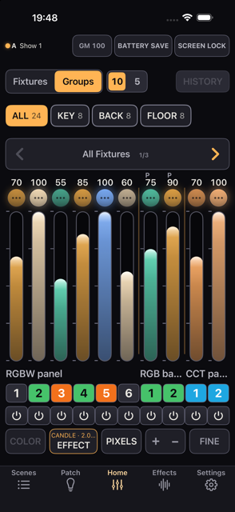

iPhone Lighting Console
Konsoleta oświetleniowa dla filmu i telewizji, zbudowana na iPhone'a. Prowadź urządzenia przez Art-Net, sACN i CRMX — kolor, Scenes, efekty i diagnostyka w Twojej kieszeni.
Sama aplikacja jest po angielsku. Ta instrukcja objaśnia te angielskie ekrany.
Więcej: Fixture / GDTF Output / Diagnostics MIDI Session
Ostatnia aktualizacja 2026-10-24 ・ sprawdzono na 0.2 build 347
Najważniejsze zmiany w każdej wersji, od najnowszej. Szczegóły podaje każdy rozdział.
Do tego miejsca nie potrzebujesz ani jednego urządzenia. Nazwy przycisków podajemy dokładnie w takiej postaci, w jakiej widzisz je na ekranie.
Aplikacja startuje z gotowym rigiem ćwiczeniowym: 4 urządzenia są już spatchowane. Trzy minuty spędzone tutaj pokażą Ci prawie wszystko, co Kanau potrafi.
GM (GM 100 na iPadzie) u góry ekranu i w otwartym panelu ściągnij grand mastera w dół. Górny pasek ekranu i krawędź ekranu robią się czerwone.→100, żeby go przywrócić, i zamknij panel.Fader reaguje na odległość, jaką pokonuje Twój palec, a nie na miejsce dotknięcia. To, gdzie zaczniesz, nie ma żadnego wpływu na wynik.
Intensity ustawia jasność, Color Temperature — biel, RGB — barwę.Każde urządzenie ma inne możliwości, więc widoczne pozycje zmieniają się razem z nim.
Scenes na dole ekranu.DIM, COLOR, PIXELS, FX. Stuknij jedną z nich.Na początek działa AUTO UPDATE, więc wszystko, co zmienisz po przywołaniu, zapisuje się z powrotem do tej Scene. Przestaw górę Scenes na MANUAL UPDATE albo zablokuj tę Scene, żeby została taka, jaka jest (rozdział 08).
Przesuń OUTPUT OFF u góry po lewej, żeby wysyłać (rozdział 02). Potem nawet bez podłączonych urządzeń Settings → DMX Monitor pokazuje liczby, które Kanau naprawdę wysyła. Poruszaj faderem, a liczby ruszą razem z nim.
Demo zawiera 4 urządzenia z biblioteki Generic: trzy RGBW i jeden BAR (4 piksele). Tworzą trzy grupy, nazwane KEY (dwa RGBW), BACK (jeden RGBW) i FLOOR (BAR).
Grand master stoi na 100, dwa urządzenia (jeden RGBW i BAR) są oznaczone do BATTERY SAVE i noszą zieloną etykietę, na FLOOR działa efekt ognia, a cztery Scenes są zapisane. Nic z tego nie udaje prawdziwego produktu.
Kiedy demo stanie się zrozumiałe, przejdź na własny sprzęt.
Settings → Output sprawdź, czy Nodes Answering pokazuje 1 lub więcej. Potem stuknij OUTPUT OFF u góry po lewej na Home i przesuń, żeby wysyłać; Network Output zaświeci się na zielono (rozdział 02). Sprzęt, który nie odpowiada na odpytywanie, zostaje na 0, choć normalnie odbiera; kieruj się wtedy samym światłem.Patch → ＋ New Patch → Add New Fixture, a potem ustaw model, tryb DMX, uniwersum i adres. Wszystko musi zgadzać się z ustawieniami samego urządzenia (rozdział 03).Scenes, żeby zachować obraz (rozdział 08).Rig ćwiczeniowy to zwykły show. Usuń go, kiedy spatchujesz własne urządzenia, albo załóż nowy przez Settings → Shows → New Show.
OUTPUT OFF u góry po lewej i przesuń, żeby wysyłać. Jeśli inna konsoleta już wysyła do tego samego uniwersum, zobaczysz Blocked, a SHARED, jeśli pojawi się później. Oba przypadki wyjaśnia rozdział 02.Urządzenie z włączonym Lock nie zgaśnie ani po naciśnięciu blackoutu, ani po ściągnięciu grand mastera do zera. Przed ujęciem sprawdź, czy nie zostawiłeś włączonych blokad. Liczbę tego, co świeci mimo blackoutu, widać obok zielonej 🔒 u góry ekranu.
Co leży na ekranie Home, od góry do dołu, i jak go czytać, kiedy coś wygląda nie tak.

123456789Zanim przejdziesz do szczegółowych tabel: tylko te miejsca musisz znać.
| Miejsce | Do czego służy |
|---|---|
| GM | Jasność ogólna, u góry ekranu |
| Fixtures / Groups | Wybiera, które urządzenia są widoczne |
| Fader | Ustawia intensywność |
| Scenes | Zapisuje obrazy i przywraca je |
| Patch | Rejestruje urządzenia |
| Effects | Wypisuje działające efekty i zatrzymuje je |
| Settings | Wyjście, show, MIDI, sesja |
Wszystko poniżej to już szczegóły.
Pracujesz na Home. Stuknięcie innej zakładki otwiera panel nad nim. Żeby wrócić na Home, pociągnij uchwyt u góry w dół albo stuknij × w lewym górnym rogu. Panel otwarty z wnętrza innego, jak DMX Monitor, ma zamiast tego ‹ w lewym górnym rogu, a ‹ cofa o jeden krok. Na iPadzie z iPadOS 18 lub nowszym panele otwierają się prawie do rozmiaru ekranu. COLOR, EFFECT, Patch i Scenes są tam ułożone w dwóch kolumnach, gdy okno jest dość szerokie.
| Zakładka | Do czego służy | Zobacz |
|---|---|---|
| Scenes | Zapisywanie i przywoływanie obrazów | rozdział 08 |
| Patch | Urządzenia, adresy, tryby, grupy | rozdział 03 |
| Home | Ustawianie intensywności faderami | rozdział 04 |
| Effects | Lista efektów, ich regulacja i zatrzymywanie | rozdział 09 |
| Settings | Wyjście DMX, show, MIDI, sesja, LAMP MODE, preferencje | rozdział 02, 11–13 |
Po lewej jest stan wysyłania. Za każdym razem, gdy Kanau się otwiera, widać OUTPUT OFF i nic nie wychodzi, dopóki go nie stukniesz i nie przesuniesz (rozdział 02). Podczas wysyłania widać SENDING i uniwersa, na przykład SENDING U1 U2; gdy brakuje miejsca, zamienia się w trasę, jedną literę: A dla Art-Net, S dla sACN, z kropką, która oddycha, dopóki DMX wychodzi. Bluetooth ma własną kropkę i nazwę. Obok jest nazwa show, w którym jesteś; na wąskim telefonie, gdzie w wierszu nie zostaje miejsca, nie pojawia się. Gdy BLIND jest włączony, cała ta lewa część zmienia się w bursztynowy napis BLIND; stuknij go, żeby wyjść z BLIND (rozdział 08).
| Wyświetlane | Znaczenie |
|---|---|
| OUTPUT OFF | Nic nie jest wysyłane od otwarcia Kanau. Stuknij i przesuń. Z Slide to send pod spodem — poruszyłeś coś przy wyłączonym wyjściu i nic nie wyszło |
| LISTENING | Sprawdza, czy jest inny nadawca, zanim zacznie wysyłać, przez około sekundę |
| SENDING U1 U2 | Te uniwersa wychodzą. Linia taka jak U3 OFF oznacza spatchowane uniwersum, którego jeszcze nie otworzono przesunięciem |
| Blocked U1 | Inny nadawca jest już w tym uniwersum, więc Kanau do niego nie wysyła. Stuknij, żeby zobaczyć możliwości (rozdział 02) |
| Zielona kropka | Trwa wysyłanie |
| Bursztynowa kropka | Spowolnione wysyłanie albo ponowne łączenie (Reconnecting…) |
| Czerwona kropka, ART-NET No node lub SACN No node | Nikt nie odpowiada. Wiersz stanu podaje trasę, w skróconej postaci na wąskim ekranie. Stuknij go, żeby otworzyć Settings → Output |
| Czerwona kropka, ART-NET Blocked lub SACN Blocked | Coś zatrzymuje wyjście i samo nie minie. Wiersz stanu podaje trasę i mówi Blocked, w skróconej postaci na wąskim ekranie. Stuknij go, żeby otworzyć Settings → Output, który wypisuje na czerwono powód i co z tym zrobić |
| Szara kropka, Idle | Wyjście jest otwarte, ale nic nie wychodzi, na przykład gdy wszystkie uniwersa są wyłączone albo nie ma sieci |
| SHARED i adres IP albo nazwa urządzenia | Inna konsoleta wysyła do tego samego uniwersum. Ta wysyła nadal |
| JOINED lub WATCH ONLY i nazwa | Trwa sesja. DMX wychodzi z hosta |
Zielona kropka nie dowodzi, że urządzenie cokolwiek odebrało. Jak to sprawdzić, opisuje rozdział 02; co robić, gdy coś zawodzi — rozdział 14.
W środkowej i prawej części paska znajdziesz poniższe elementy. GM stoi na prawym końcu, za SCREEN LOCK.
| Element | Stuknięcie | Przytrzymanie lub uwaga |
|---|---|---|
| GM 100 | Otwiera panel grand mastera | Przytrzymaj, żeby wejść w jego ustawienia. Na iPhonie widać GM albo samą liczbę, gdy jest ściągnięty. Poniżej 100 jest wypełniony na czerwono i pulsuje |
| B.O. | Zdejmuje blackout. Przy GM na 0 otwiera zamiast tego panel GM | Zastępuje GM, dopóki konsoleta jest ciemna. Grand master na zerze też melduje się jako B.O. |
| U1 OFF (czerwone) | Nic | Które uniwersa są wyłączone, po numerze. Do trzech, potem +. Włącz je z powrotem w Settings → Output |
| 🔒 n (zielone) | Nic | To, co wciąż świeci, gdy konsoleta jest ciemna: zablokowane urządzenia, fadery ustawione jako przełącznik, które są na ON, i blokady pozostawione na starym adresie |
| BATTERY SAVE | Włącza i wyłącza | Przytrzymaj, żeby ustawić głębokość ściemnienia i czas przejścia. Gdy jest włączony, co jakiś czas pokazuje bieżącą głębokość, np. −50%. Na iPhonie, gdy BLIND jest włączony, UPDATE zajmuje jego miejsce i zapisuje obraz z BLIND w bieżącej Scene (rozdział 08) |
| UPDATE (iPhone) | Zapisuje bieżący stan w przywołanej Scene | Zamiast nazwy show, gdy bieżąca jest Scene przywołana w MANUAL UPDATE: miga, gdy jest co zapisać, przygaszony, gdy nic się nie różni. Stan wysyłania zajmuje jego miejsce, gdy ma coś do powiedzenia |
| SCREEN LOCK | Nie blokuje | Przytrzymaj przez 0.5 sekund, żeby zablokować ekran |
U1 OFF i 🔒 pojawiają się tylko wtedy, gdy jest o czym mówić: pierwsze, gdy wyłączysz uniwersum z podpiętymi urządzeniami, 🔒 dopóki konsoleta ogłasza ciemność, czyli blackout albo grand master na zerze. Przy włączonym Strap Lock ekran blokuje się także wtedy, gdy iPhone zawiśnie do góry nogami; przesuń w prawo, żeby go odblokować.
| Element | Jak go używać |
|---|---|
| Fixtures / Groups | Przełącza między widokiem według modelu a widokiem według grupy. Na iPadzie jest w pasku stanu u góry Home |
| 10 / 5 | Liczba faderów na stronie. Przy pięciu każdy jest szerszy. Na iPadzie to 30 / 20 / 15 (40 / 20 na modelu 13-calowym), w pasku stanu |
| HISTORY | Otwiera listę wcześniejszych stanów. Na iPadzie jest w pasku stanu, tuż na prawo od nazwy show |
| Przyciski modeli i grup | Stuknij, żeby pokazać te urządzenia. Przytrzymaj, żeby ustawić kolor i intensywność wszystkich naraz. Każdy kończy się liczbą swoich urządzeń, jak ×24; gdy dwa nosiłyby tę samą nazwę, za nią w nawiasie kwadratowym idzie krótki znak trybu, jak [111] |
| CLEAR n | Czyści zaznaczenie. Światło się nie zmienia |
| ‹ / › | Przechodzi między stronami |
| Liczba | Intensywność od 0 do 100. W trakcie przeciągania widać ją powiększoną u góry |
| Okrągła ikona urządzenia (…) | Stuknij, żeby zaznaczyć. Przytrzymaj, żeby otworzyć panel tego urządzenia |
| Fader | Przeciągaj w górę i w dół, żeby ustawić intensywność |
| Nazwa modelu | Oznacza ciąg urządzeń tego samego modelu i trybu |
| Przycisk numeru | Numer urządzenia. W trybie pianina zmienia intensywność, dopóki go trzymasz |
| ⏻ | Wyłącza i włącza wyjście, zachowując wartość |
| COLOR | Ustawia kolor i intensywność zaznaczonych urządzeń |
| EFFECT | Nakłada efekt na zaznaczone urządzenia |
| PIXELS | Rozwija i zwija komórki urządzeń pikselowych |
| ＋ − | Przełącza tryb pianina: LOCK → ＋ → − |
| FINE | Przełącza czułość: normalna → FINE (1/10) → FINE+ (1/20) |
COLOR jest niedostępny, kiedy nic nie jest zaznaczone; każde zaznaczenie go otwiera, nawet urządzenia bez koloru (rozdział 05). EFFECT wymaga zaznaczenia. PIXELS wymaga urządzenia pikselowego na stronie.
| Kolor lub oznaczenie | Znaczenie |
|---|---|
| Bursztynowy | Zaznaczone albo aktywne |
| Czerwony | Blackout, niski grand master, problem z siecią, tryb pianina. Coś do sprawdzenia |
| Zielony | Trwa wysyłanie. Fixture Lock. Włączony BATTERY SAVE |
| Bursztynowy górny pasek i krawędź | BLIND jest włączony. To, co robisz, nie dociera do urządzeń |
| Fioletowy | Wyłączone wyjście albo zablokowany ekran |
| Cyjan | Urządzenie prowadzone przez drugie urządzenie w sesji |
| Pomarańczowy | Wartość na ustawionym przez Ciebie ograniczeniu |
| Szary | Niedostępne albo zatrzymane |
Okrągła ikona niesie kolor urządzenia i jego rzeczywiste wyjście. Przy urządzeniu z pikselami czyta też komórki, więc urządzenie stojące na 100 z wszystkimi komórkami w dole pokaże się ciemne. Zaznaczenie ma bursztynową obwódkę, wyłączone wyjście — fioletowy pierścień i ⏻, blokada — zielony pierścień zewnętrzny i 🔒. Kolor, który nie daje światła, na przykład RGB samo 0, rysuje kółko jako wyłączone, nawet gdy intensywność jest powyżej 0. Działający efekt wprawia ikonę w ruch.
Czerwona krawędź biegnie wokół ekranu zawsze, gdy grand master jest poniżej 100, albo podczas blackoutu. Krawędź pulsuje, a po niej obiega światło. Na zerze — albo przy blackoucie — krawędź robi się grubsza i głębsza, a światło obiega szybciej, więc oba stany rozróżnisz bez czytania. Zielona krawędź, po której powoli sunie długie światło, znaczy, że BATTERY SAVE jest włączony. Gdy obowiązują oba stany, krawędź zmienia kolory po kolei: czerwień przez około sześć sekund, zieleń przez około trzy. BLIND wygląda inaczej: górny pasek ekranu, tam gdzie zegar, i krawędź stają się jedną bursztynową ramą. Jeśli podczas BLIND grand master jest obniżony, na bursztynowej ramie pulsuje czerwona krawędź. Podczas BLIND zieleni nie widać. Krawędź mówi, że wyjście jest przytrzymane; oznaczenie w wierszu stanu mówi, przez co.
↑ Spis treściJak ustawić połączenie ze sprzętem oświetleniowym i jak sprawdzić, że sygnał do niego dociera.
 12345
12345Kanau nigdy nie zaczyna wysyłać sam. Za każdym razem, gdy się otwiera, wyjście jest wyłączone, a wiersz stanu pokazuje OUTPUT OFF; patch, miejsce docelowe i wyłączone uniwersa zostają zapamiętane. Stuknij i przesuń, żeby wysyłać. Kanau najpierw nasłuchuje przez około sekundę i jeśli w uniwersum nie ma innego nadawcy, wysyła potem każde spatchowane uniwersum, które jest włączone, w sposób ciągły, normalnie z częstotliwością 44 Hz. Przełączenie między Art-Net a sACN, sieć, której nie było w chwili przesunięcia, opuszczenie sesji jako gość i wyjście z LAMP MODE przywracają wyjście sieciowe do wyłączonego, więc przesuń jeszcze raz. Uniwersum dodane do patcha później zostaje wyłączone, dopóki nie przesuniesz, a wiersz stanu pokazuje je jako U3 OFF. Bluetooth łączy się w chwili przesunięcia, nie przy starcie. Poruszenie faderem ani przywołanie Scene nigdy nie włącza wyjścia; jeśli dotkniesz czegoś przy wyłączonym wyjściu, wiersz stanu pokaże Slide to send. Wyjście zatrzymuje się, gdy Kanau nie jest na ekranie, i rusza znowu, gdy wrócisz; SCREEN LOCK go nie zatrzymuje.
Art-Net i sACN wykluczają się wzajemnie: wybierz jeden. CRMX przez Bluetooth działa równolegle do obu.
Network wypisuje Twoje połączenia Wi-Fi, Ethernet i Hotspot wraz z ich adresami oraz liczbą node'ów, które odpowiedziały w każdym z nich.
Jeśli pracujesz jednocześnie po kablu i po Wi-Fi, sprawdź, czy oba połączenia są na liście.
| Ustawienie | Dokąd wysyła | Kiedy go używać |
|---|---|---|
| AUTO (Art-Net) | Każde uniwersum unicastem do node'ów, które wymieniają je w swojej odpowiedzi; node, który nie wymienia żadnego, dostaje wszystkie. Uniwersum, którego żaden node nie wymienia, idzie broadcastem w każdej ramce, chyba że na liście poniżej zaznaczono adres. Sam broadcast, jeśli nic nie odpowiedziało i lista jest pusta | Normalny wybór |
| BROADCAST (Art-Net) | Każda ramka do podsieci każdej sieci | Kiedy node podaje błędny adres, a AUTO aktualizuje się powoli |
| UNICAST | Prosto na adresy, które wpiszesz | Kiedy broadcast nie dociera albo kiedy chcesz wskazać cel z nazwy |
| 255.255.255.255 (Art-Net) | Broadcast w obrębie segmentu. Nie przechodzi przez router | Kiedy adresacja się nie zgadza, a zwykły broadcast zawodzi. iOS może to zablokować |
| MULTICAST (sACN) | Adres multicastowy każdego uniwersum | Domyślne ustawienie sACN |
Przy UNICAST wpisz adres node'a i stuknij Add. Ta sama lista jest widoczna przy AUTO, dla sprzętu, który nie odpowiada na odpytywanie. Każde uniwersum idzie na każdy zaznaczony adres. Odznacz pole po lewej stronie adresu, żeby przestać do niego wysyłać, a zostawić go na liście; × go usuwa. Przy UNICAST i bez żadnego zaznaczenia czerwony wiersz mówi No node IP is switched on or entered. No DMX is going out over the network.
Jeśli przy AUTO Nodes Answering pokazuje 1 lub więcej, ale jakieś urządzenie nie reaguje, sprawdź, czy node nie podaje o sobie błędnego adresu. Zajrzyj do Destination i spróbuj BROADCAST. Pozostałe przyczyny opóźnień opisuje rozdział 14.
Stuknięcie RESCAN pod Art-Net odświeża listę node'ów. Użyj go po dołożeniu sprzętu, po jego odłączeniu albo po zmianie adresu. Bez Twojej ingerencji nowy node pojawia się po około 3 sekundach, a odłączony znika po mniej więcej 10.
Wysyłanie trwa w czasie skanowania. RESCAN mierzy też czas obiegu do każdego node'a, który odpowiada. RESCAN jest niedostępny, kiedy nie ma użytecznej sieci.
Czerwony wiersz w Settings → Output mówi, co zatrzymało wyjście i co zrobić: włączyć uprawnienie do sieci lokalnej, przełączyć na UNICAST i wpisać adres węzła, sprawdzić wpisany adres, sprawdzić Wi-Fi, podać węzłowi zasilanie. CRMX ma własny wiersz. Własne sformułowanie konsolety zostaje na końcu w nawiasie, żeby dało się je zacytować dokładnie.
Universes wypisuje każde spatchowane uniwersum wraz z liczbą urządzeń, liczbą świecących oraz przełącznikiem ON/OFF. Uniwersum, które jest OFF, pokazuje Not sending, tak samo jak takie, którego jeszcze nie otworzono przesunięciem.
OFF zatrzymuje wysyłanie tego uniwersum. Nic do niego nie wychodzi przez Art-Net ani sACN, a przez Bluetooth połączenie zostaje, ale nic nie jest zapisywane. Odbiornik może zachować ostatnie wartości, więc urządzenie może dalej świecić. To, które uniwersa są wyłączone, widać u góry ekranu jako U1 OFF.
Jeśli Twój node oczekuje Net / Sub-Net / Universe zamiast jednej liczby, włącz Settings → Output → Art-Net → Net / Sub / Uni. Zależność brzmi Net × 256 + Sub × 16 + Uni.
Priorytet sACN może wynosić 0, 100 albo 200. Domyślnie jest to 100 i jest to priorytet, z jakim Kanau wysyła swoje wyjście sACN.
Wybrany nadajnik niesie uniwersum, którego używa Twój patch (U1, gdy patch leży w uniwersum 1). Gdy patch obejmuje więcej niż jedno uniwersum, wybierz, które niesie, przyciskami − i + w wierszu Universe pod nadajnikiem; gdy wybierzesz ręcznie, Kanau przestaje wybierać za Ciebie, dopóki nie rozłączysz nadajnika i nie wybierzesz go ponownie. Następnym razem włączenie Bluetootha łączy z tym samym nadajnikiem, gdy przesuniesz, żeby wysyłać. Skanowanie ustaje, gdy to, co wybrałeś, się połączy, więc drugiego nadajnika szuka się przez RESCAN. Lista mówi connected o sparowanym i sending o tym, do którego idą dane. Kiedy nadajnik nie może się połączyć albo się rozłącza, Settings → Output mówi, co sprawdzić, z komunikatem samego systemu w nawiasie.
Kiedy to samo uniwersum wychodzi i po sieci, i przez Bluetooth, Settings → Output to mówi: U1: network and Bluetooth output are both on. To stwierdzenie faktu, nie ostrzeżenie. Odbiornik CRMX bierze wyjście nadajnika, z którym jest sparowany, więc to samo U1 w Kanau samo z siebie nie karmi jednego urządzenia dwa razy. Miga tylko tam, gdzie urządzenie naprawdę odbiera z obu dróg; tam jedną z nich wyłącz.
Jeśli nadajnik nadal odmawia przyjmowania Art-Net po wyłączeniu Bluetootha, sprawdź ustawienia samego nadajnika.
| Wyświetlane | Co znaczy i co zrobić |
|---|---|
| Blocked U1 | Gdy przesunąłeś, inny nadawca był już w U1, więc Kanau do niego nie wysyła. Stuknij: pasek nazywa go, na przykład U1 In Use i nadawcę, i oferuje Join, gdy jest to host Kanau, Send U2 Only, gdy są wolne inne uniwersa, oraz Cancel. Nie ma sposobu, żeby wysłać na wierzch |
| SHARED + adres IP albo nazwa urządzenia | Inna konsoleta pojawiła się już po starcie tej. Wysyłanie trwa dalej, więc jeśli trzeba, zatrzymaj jedną z nich |
Urządzenia Kanau mówią sobie nawzajem, jakie uniwersa wysyłają, więc dwa, które przesuwają jednocześnie, nie wysyłają oba. sACN, nadawcy unicast i Bluetooth w innych aplikacjach mogą stąd nie być widoczne.
LAMP MODE zamienia ten iPhone lub iPad w światło, którym steruje inna konsoleta przez Art-Net lub sACN. Otwórz Settings → LAMP MODE, ostatni nagłówek. Wybierz Art-Net albo sACN, wybierz MODE z listy — RGB 6ch, HUE SAT 5ch, RGB 2 CELLS 9ch, RGB 4 CELLS 15ch, HUE SAT 2 CELLS 9ch albo HUE SAT 4 CELLS 15ch — i ustaw Universe i Address, wpisując je albo przyciskami − i +. Wiersz pod nimi pokazuje, które adresy zajmuje każda część. Stuknij START. Nie jest dostępny, gdy BLIND jest włączony.
Ekran przyjmuje odbierany kolor i pokazuje WAITING, dopóki nie przyjdą pierwsze dane; jeśli dane ustaną, zachowuje ostatni kolor. Każdy tryb zaczyna się od Screen Dimmer, a kończy na Back Light i Vibration. Pomiędzy nimi RGB 6ch ma Red, Green i Blue, a HUE SAT 5ch ma Hue i Saturation; tryby CELLS dzielą ekran na 2 połowy albo 4 ćwiartki, każda z własnymi Red, Green i Blue albo własnymi Dimmer, Hue i Saturation, numerowane od lewego górnego rogu. Hue od 0 do 255 obejmuje całe koło. Screen Dimmer przyciemnia tylko ekran. Back Light to światło z tyłu urządzenia, a Vibration to jego wibracja; urządzenie, które jej nie ma, ją pomija. Na drugiej konsolecie spatchuj je jako Kanau Screen (rozdział 03). W Art-Net odpowiada na odpytywanie jako Kanau Screen, więc na liście node'ów drugiej konsolety widać je pod tą nazwą.
Żeby wyjść, przesuń przełącznik w prawym górnym rogu, a potem stuknij ×, które się pojawi. Gdy LAMP MODE jest włączony, to urządzenie nie wysyła DMX, MIDI jest wyłączone, ekran świeci pełną jasnością i sam się nie blokuje, a gość opuszcza swoją sesję. Po wyjściu jasność i MIDI wracają na miejsce, a wyjście jest znów wyłączone.
Dolna połowa Output jest po to, żeby pokazać Ci, w którym miejscu sygnał się zatrzymał. To nie jest zestaw ustawień. Kiedy wyjście jest powolne albo go nie ma, czytaj od góry (rozdział 14).
| Pozycja | Jak ją czytać |
|---|---|
| Destination | Dokąd sygnał naprawdę idzie. ↦ po adresie oznacza unicast do node'a, który odpowiedział |
| Medium | Używane połączenia, na przykład Wi-Fi + Ethernet |
| Network Output | Pakiety wysłane przez sieć w ostatniej sekundzie. Około 44 to wartość normalna. Nothing znaczy, że nie wyszedł żaden, tak jak przed przesunięciem. Bluetooth nie jest tu liczony |
| Clock | Najgorsza przerwa między wysyłkami. Około 23 ms to norma. Powyżej 100 ms wskazuje na telefon |
| Touch → DMX | Od Twojego palca do pakietu. Około 25 ms to norma |
| Nodes Answering | Ile odpowiedziało, z nazwą, adresem, połączeniem i czasem obiegu. Czas obiegu jest pusty, dopóki RESCAN go nie zmierzy; liczba w nawiasie to najgorszy wynik z ostatnich 10 sekund. Przy AUTO wiersz pod każdym node'em wymienia wysyłane do niego uniwersa, np. U1 albo U0–U3 |
| Type these into the node | Net / Sub / Uni do wpisania w node, kiedy ten sposób wyświetlania jest włączony |
Te pozycje zawężają problem, ale nie dowodzą sukcesu. Pokazują to, co wysyła Kanau, a tego, czy urządzenie to odebrało, stąd nie widać. Network Output może świecić na zielono, a urządzenia mimo to pozostaną ciemne przez niezgodność ustawień albo usterkę po drugiej stronie. Sprzęt, który nie odpowiada na odpytywanie, pokazuje 0 w Nodes Answering nawet wtedy, gdy odbiera.
Settings → DMX Monitor pokazuje wszystkie 512 kanałów każdego uniwersum w postaci, w jakiej wychodzą. Odświeża się 10 razy na sekundę. Samo patrzenie nie wpływa na wysyłanie. Uniwersum, które nie wychodzi, bo jest OFF albo jeszcze go nie otwarto przesunięciem, pokazuje swój nagłówek z OFF i bez wartości.
Komórki tylko pokazują wartości; nic się tu nie wpisuje. Blokada, której urządzenie zostało usunięte, jest wypisana nad siatką, z UNLOCK.
Wartości czyta się w procentach albo jako surowy DMX, zgodnie z tym samym ustawieniem co reszta konsolety. Każdy universe zwija się osobno; zwinięty nagłówek zachowuje liczbę kanałów, które wciąż stoją, więc widzisz który pracuje bez otwierania.
↑ Spis treściZarejestruj urządzenia, z których korzystasz, i ustaw model, tryb DMX, uniwersum, adres, numer i grupy.
Intensywność i kolor ustawia się na Home (rozdział 04 i rozdział 05).

| Pole | Co oznacza |
|---|---|
| Favorites | Przy każdym trybie, przy polu Mode i przy każdym producencie jest ★; stuknij ją, żeby dodać albo usunąć. Tryby z gwiazdką pojawiają się jako przyciski pod Favorites, producenci z gwiazdką trafiają na początek listy, a Edit obok Favorites wypisuje je wszystkie |
| Name | Własna nazwa tego jednego urządzenia. Widać ją w Patch i w Patch List; Home pokazuje zamiast niej Label. Domyślnie nazwa modelu |
| Number / How Many | Numer, którym wołasz urządzenie na planie, i ile sztuk dodać, do 4,096. Numer można zostawić pusty; zaczyna się od najwyższego w użyciu plus jeden |
| Label | Nazwa wyświetlana wspólna dla wszystkich urządzeń tego modelu w tym samym trybie. Biegnie pod faderami. Domyślnie oficjalna nazwa modelu; jeśli zmienisz tu Mode, Label, którego nie wpisałeś, podąża za nowym trybem. Można ją też wpisać w panelu urządzenia (rozdział 06) |
| Universe / Address | Domyślnie U1 / 1. Zmiana uniwersum cofa adres do 1. U0 jest dozwolone |
| Offset | Odstęp między urządzeniami. Wypełniany z liczby kanałów danego trybu |
| Gap | Dodatkowe kanały pozostawiane między urządzeniami |
| BATTERY SAVE | Oznacza nowe urządzenia dla BATTERY SAVE |
| Label Color | Tło numeru. Siedem kolorów albo żaden |
| Map | Układ 512 kanałów. Przeciągnij i puść, żeby ustawić adres początkowy |
Każde kolejne urządzenie po pierwszym zaczyna się od poprzedniego adresu początkowego powiększonego o Offset i Gap, ale nigdy bliżej niż liczba kanałów trybu, więc adresy się nie nakładają. Wszystko, co wychodzi poza 512, trafia do następnego uniwersum. Offset mniejszy niż liczba kanałów trybu daje ostrzeżenie, ale możesz kontynuować.
Na końcu panel wypisuje to, co weszło — po jednym wierszu na urządzenie, z numerem, nazwą i adresem — pod wierszem w rodzaju Added 3 × Titan Tube — U1 1–15. Zostaje, dopóki nie stukniesz OK, więc możesz patchować dalej i przeczytać go później. Patched, pod formularzem, wypisuje już spatchowane modele; stuknij wiersz, żeby otworzyć formularz z wypełnionym tym modelem i trybem.
| Numer | Co oznacza |
|---|---|
| Unit No. | Numer bieżący w obrębie modelu. Przydzielany automatycznie |
| Fixture Number | Numer, którego używasz na planie. Ustawiasz go sam |
To, który z nich pokazuje Home, ustawia się w Settings → Settings → Fixture Numbers → Show the Fixture Number. Domyślny jest Unit No. Powtórzone numery urządzeń dają ostrzeżenie, ale są dozwolone.
Ta wersja niesie 61 producentów, 1,081 urządzeń i 15,477 trybów. Do wszystkiego, czego nie ma w bibliotece, użyj definicji Generic albo Custom Fixtures.
Generic obejmuje Dimmer, Dimmer 16-bit, Bi-color, CCT, RGB, RGBW, Dimmer + RGB i Dimmer + RGBW. Bulb i Desk lamp są wymienione pod producentem Tungsten. Kanau Screen, pod producentem Kanau, to urządzenie w LAMP MODE (rozdział 02): jedno Add patchuje trzy urządzenia z rzędu — Kanau Screen, Kanau Back Light i Kanau Vibration — w dowolnym z sześciu trybów LAMP MODE (rozdział 02). Liczba w nazwie trybu to kanały, które zajmują razem te trzy, a tryby CELLS dzielą ekran na piksele, otwierane przez PIXELS.
Patched wypisuje urządzenia według modelu i trybu. W obrębie modelu i w wierszu All urządzenia idą w kolejności faderów na Home (rozdział 04). Stuknij nagłówek, żeby zwinąć grupę. Stuknij wiersz urządzenia, żeby otworzyć jego ustawienia patcha.
Patch List, pod nagłówkiem Patched, pokazuje wszystkie spatchowane urządzenia w kolejności adresów, uniwersum po uniwersum. Każdy wiersz podaje uniwersum i adres początkowy dużymi cyframi, pod nim adres końcowy, numer urządzenia, a potem jego nazwę i tryb; tryby nigdy nie są skracane. Służy do czytania, kiedy ustawiasz adresy na samych urządzeniach; niczego się w nim nie zmienia. Nakładający się adres początkowy jest czerwony i oznaczony ⚠. Export PDF w prawym górnym rogu robi kopię A4 do rozdania, z nazwą show i datą na każdej stronie. Fader Order, który otwiera kolejność faderów na Home, nie ma w tym wierszu; jest w wierszu All, w każdej grupie i w każdym modelu po ich otwarciu (rozdział 04).
Fixture Sheet, w Settings tuż pod DMX Monitor, pokazuje, jak w tej chwili wygląda każde urządzenie, w kolejności All na Home: numer i nazwę, adres, intensywność, kolor, ewentualny działający efekt oraz znaczniki takie jak LOCK i OFF. Niczego się w nim nie zmienia, a Export PDF robi kopię. Gdy w patchu są grupy, ALL i przycisk dla każdej grupy pod tytułem zawężają listę bez zmieniania Home, a Export PDF pyta wtedy, czy wziąć tę grupę, czy wszystko.
Labels, w Settings pod Fixture Sheet, robi naklejki na urządzenia jako PDF A4, w kolejności adresów. Standard ma 52.5 × 37.125 mm, 32 na arkuszu; Small ma 26.25 × 14.85 mm, 160 na arkuszu. Copies ustawia od 1 do 4 na urządzenie. Każda naklejka niesie numer urządzenia, Label, adres początkowy i tryb. Pod podglądem Page 1 of 3 mówi, ile jest arkuszy, a ‹ › przechodzą między nimi. Export PDF zapisuje plik.
⚠ oznacza nakładający się adres albo ciąg wychodzący poza kanał 512. Oznacza też urządzenie, którego wyjście jest trzymane na innych wartościach przez blokadę; otwórz urządzenie, żeby to sprawdzić. Wysyłanie trwa dalej, dopóki ostrzeżenie jest widoczne, więc sprawdź ustawienia. n fixture data problems odnosi się do usterek znalezionych przy wczytywaniu danych urządzeń; stuknij, żeby zobaczyć szczegóły.
Praca na tej liście nie zmienia tego, które urządzenia pokazuje Home.
Stuknij Select Many i wybierz urządzenia. ✓ w wierszu modelu bierze wszystkie egzemplarze tego modelu. Każde ✓ pokazuje kolejność, w jakiej je wybrałeś, od 1, a nazywanie, numerowanie i adresowanie idą w tej kolejności. Urządzenie jest zaznaczone tylko w tym wierszu, który stuknąłeś, nie w jego innych wierszach.
| Działanie | Co robi |
|---|---|
| Select All / Select None | Bierze albo czyści wszystko, razem ze zwiniętymi wierszami |
| Name | Numeruje końcówki nazw w kolejności zaznaczania |
| Number | Ustawia numery urządzeń w kolejności zaznaczania |
| Address | Rozkłada je na nowo od uniwersum, adresu początkowego i odstępu |
| Battery | Oznacza je dla BATTERY SAVE albo zdejmuje to oznaczenie |
| New group | Buduje grupę z zaznaczenia |
| Delete | Usuwa je. Sprawdź liczbę, zanim potwierdzisz |
Usunięcie urządzenia kasuje także jego intensywność, kolor i ograniczenia oraz wyjmuje je ze wszystkich Scenes. HISTORY potrafi to cofnąć. Usunięcie z wnętrza grupy wyrzuca je tylko z tej grupy; samo urządzenie zostaje. Jeśli grupa zostanie przez to pusta, zostaje usunięta również grupa, o czym mówi potwierdzenie.
Proponowane są tylko zakresy dostatecznie duże. Nakładające się urządzenia są pokazane na czerwono.
Close Gaps w prawym górnym rogu Re-patch dosuwa urządzenia jednego uniwersum od adresu 1, w kolejności adresów. Luki zostawione celowo też zostają zamknięte. Wypisuje tylko te urządzenia, które się przesuną, z Before i After, i nic się nie zmienia, dopóki nie stukniesz Apply. Adresy DMX ustawione na samych urządzeniach się nie zmieniają: ustaw każde urządzenie na jego wartość After. Zablokowane adresy zachowują poprzednie wartości. Całe dosunięcie to jeden krok w HISTORY.
Urządzenie może należeć do kilku grup. Nie jest kopiowane: zmiana z poziomu dowolnej grupy zmienia to samo urządzenie. Dodanie do grupy zostawia je również w All.
Stuknięcie nazwy grupy pozwala ustawić nazwę, zobaczyć liczbę urządzeń, zakres adresów i układ albo usunąć grupę. Edit Group dodaje urządzenia do grupy; Add to an Existing Group wrzuca bieżące zaznaczenie do grupy, którą już masz.
Group Order, w wierszu pod ＋ New Group, ustawia kolejność grup. Pojawia się, gdy są co najmniej dwie grupy, i nie jest pokazywany gościowi. Przeciągnij uchwyt po prawej stronie wiersza; przyciski modeli i grup w Home oraz ta lista podążają wtedy za tą samą kolejnością. All nie ma na liście i zawsze jest pierwsze. Każde przesunięcie to jeden krok w HISTORY.
To, czy Patch pokazuje wiersz All, ustawia się w Settings → Settings → Groups → Show the All Row.
Custom Fixtures trzyma definicje dodane przez Ciebie. Znajdziesz je w zakładce Patch, pod ＋ New Patch i listą modeli. Są dostępne w każdym show. Usunięcie definicji nie wpływa na urządzenia już z niej spatchowane.
SAVE & PATCH otwiera ekran patcha z wybraną definicją. Remember on This Device zapamiętuje Twoje logowanie; FORGET je usuwa. Pobrane wcześniej definicje zostają. Dane logowania trafiają do GDTF Share.
＋ Import a GDTF File, a potem jeszcze raz ＋ Import a GDTF File w otwartym panelu, wskaż plik .gdtf, sprawdź tryb i raport z importu, a potem zapisz. Sieć nie jest potrzebna.
Raport wypisuje to, czego nie dało się przenieść. Wartość 16-bitowa rozdzielona na odległe adresy zachowuje tylko swój bajt zgrubny, nieużywane adresy są trzymane jako puste miejsca, a kanały z innego przerwania DMX zostają pominięte. Tam, gdzie adresy się nakładają, wygrywa kanał wcześniejszy. Nieznane funkcje zachowują swoje pierwotne nazwy.
Definicję oznaczoną Imported data is not verified. warto skonfrontować z rzeczywistym urządzeniem. Błędne role popraw przez SAVE & EDIT; poprawka zadziała na urządzenia spatchowane później. This mode has no channels. znaczy, że trzeba wybrać inny tryb.
Otwórz ＋ Build by Hand i zacznij od Build It Yourself, pustej definicji, albo od szablonu: Intensity, CCT, Bi-color, RGB, HSI, x, y, CCT + HSI, Intensity + RGBW, Full Color, Full Color + White, Multi-emitter albo Pixel. Drugi wybór, Copy an Existing Fixture, zaczyna zamiast tego od urządzenia z biblioteki (niżej).
Nadaj każdemu kanałowi etykietę i ustaw rolę, rozdzielczość 8 lub 16 bitów, wartość domyślną oraz jednostkę rzeczywistą, jeśli jest potrzebna. Numery kanałów i sumę aplikacja wylicza za Ciebie. Miejsce, którego roli nie znasz, zostaw nieużywane — i tak poprowadzisz je z Channels. Save jest odrzucany, dopóki widnieje ERROR. Każdy kanał ma też Pixel: None albo numer. Kanały z tym samym numerem tworzą jeden piksel, oznaczony w tabeli P1, P2 i tak dalej. Gdy kilka kanałów Intensity nie ma Pixel, bursztynowa uwaga mówi, że ruszają się razem na jednym faderze; nadaj każdemu własny Pixel, żeby sterować nimi osobno. Szablon Pixel prosi o Each Pixel, szablon, z którego buduje się jeden piksel, i o Pixels, ile ich ma być, i powtarza kanały tyle razy.
Otwórz ＋ Build by Hand → Copy an Existing Fixture i wybierz Manufacturer, Fixture i Mode. Kopia dostaje nazwę "… (Modified)" i jest wypisana pod MODIFIED na liście Manufacturer. Duplicate and Edit pozwala zmienić nazwę, zakres temperatury barwowej (pokazywany tylko wtedy, gdy jest kanał CCT), role i nazwy kanałów, etykiety oraz wartości domyślne. Liczby kanałów, układu 16-bitowego, zakresów ani struktury przełączników zmienić się nie da.
↑ Spis treściFadery na ekranie Home. To serce Kanau.
Fader reaguje na odległość, jaką pokonuje Twój palec, a nie na miejsce dotknięcia. Możesz go prowadzić od liczby, od okrągłej ikony albo od pustego miejsca pod faderem. Jest zbudowany tak, żebyś mógł pracować, patrząc na plan zamiast na własną rękę.

Gałka lekko rośnie pod palcem i nic się nie rusza, dopóki nie przeciągniesz jej kawałek, więc możesz bezpiecznie oprzeć na niej palec. Światło wzdłuż fadera gaśnie, gdy liczba nad nim pokazuje 0, więc fader na 0 nigdy nie wygląda tak, jakby był na 1. W trakcie przeciągania numer, nazwa widoczna pod faderami i wartość pojawiają się w powiększeniu u góry ekranu. Jeśli ustawiłeś ograniczenia, fader porusza się w ich obrębie. Lekkie stuknięcie przychodzi w chwili, gdy poruszany fader dochodzi do górnego albo dolnego ograniczenia, także takiego, które ustawiłeś; nie powtarza się, dopóki tam zostajesz. ZEN i grand master robią to samo. Zablokowane urządzenie albo gość, który nie może zapisywać, go nie dostaje. Na urządzeniu, które ma kolor, odczyt pokazuje też ten kolor jako pasek, temperaturę barwową w kelwinach, G albo M z liczbą, kiedy odcień zielony / magenta schodzi z neutralnego, oraz nazwę filtra wybranego z tabeli, dopóki kolor jest nadal tym, który ustawiłeś. Kolor, który tylko pasuje do filtra, nie dostaje nazwy; biel dostaje nazwę z wartości w kelwinach. Zwykły ściemniacz nie pokazuje nic z tego, a grand master nigdy nie pokazuje koloru, bo nie wskazuje jednego urządzenia.
| Działanie | Co się dzieje |
|---|---|
| Krótkie stuknięcie | Przełącza normalna → FINE (1/10) → FINE+ (1/20) → normalna |
| Przytrzymanie | Kolejny stopień, dopóki trzymasz. Po puszczeniu wraca do normalnej |
Przełączenie w trakcie przeciągania nie powoduje skoku wartości. FINE działa też na kanałach surowych oraz na Pan i Tilt.
Zaznacz dwie lub więcej okrągłych ikon, a potem pociągnij jeden z faderów. Wszystkie przesuną się o tę samą wartość, zachowując różnice między sobą. Kiedy jeden dojdzie do ograniczenia, pozostałe jadą dalej. Zablokowane urządzenia są pomijane.
To nie to samo co praca na kilku urządzeniach w panelu COLOR, gdzie wszystkie lądują na tej samej wartości. Wyjątkiem jest tam wiersz proporcji pod Intensity, który skaluje każde urządzenie od jego własnego poziomu (rozdział 05).
Tryb ustawia przycisk ＋ − w prawym dolnym rogu.
| Tryb | Kiedy trzymasz przycisk numeru |
|---|---|
| LOCK (domyślny) | Nic się nie zmienia |
| ＋ | Idzie do poziomu Piano ＋, domyślnie 100. Nigdy powyżej górnego ograniczenia urządzenia i nigdy nie obniża urządzenia, które jest już wyżej |
| − | Idzie do poziomu Piano −, domyślnie 0. Nigdy poniżej dolnego ograniczenia urządzenia i nigdy nie podnosi urządzenia, które jest już niżej |
Po puszczeniu wartość wraca tam, gdzie była. Możesz trzymać kilka przycisków naraz albo przesuwać palec w bok, żeby zagrać je po kolei. Zablokowane urządzenia nie reagują.
Przyciski robią się czerwone, kiedy ＋ albo − jest uzbrojone. Po starcie zawsze obowiązuje LOCK. Oba poziomy ustawia się w Settings → Settings → PIANO → Piano ＋ i Piano −, dla tego urządzenia; kiedy któryś różni się od 100 albo 0, przycisk ＋ − to pokazuje, np. ＋80 albo −20.
Stuknięcie ⏻ wyłącza i włącza wyjście urządzenia, zachowując jego wartość. Przycisk robi się fioletowy, a liczba zostaje. Ruszanie faderem przy wyłączonym wyjściu niczego nie zapala. Stuknięcie przechodzi przez Power Fade — SNAP, 0.5, 1, 1.5 albo 2 sekundy, domyślnie 1.5 — ustawiony w Settings → Settings → Fade Times.
Domyślne jest ON/OFF. W ustawieniu Power Switch danego urządzenia możesz zmienić je na FLASH ON albo FLASH OFF, które działają tylko tak długo, jak trzymasz, albo na NONE. Zablokowane urządzenia nie reagują.
Piąty wybór to LOCK: kwadrat włącza wtedy i wyłącza blokadę tego urządzenia. Kwadrat ustawiony na LOCK to jedyna rzecz, której blokada nie zatrzymuje — gdyby zatrzymywała, zablokowanego urządzenia nie dałoby się już stąd odblokować.
Włącz Switch w panelu urządzenia (rozdział 06), a jego fader staje się przełącznikiem kołyskowym na całą długość fadera: ON u góry, OFF na dole. Każde stuknięcie przełącza go w chwili naciśnięcia. ON idzie do górnego ograniczenia, OFF do dolnego, a liczba nad faderem pokazuje ON albo OFF. Przeciąganie, FINE i ZEN na nim nie działają. Gdy jest na OFF, dolne pole jest jasną płytką z pogrubionym OFF, a górne pole jest płaskie. Jeśli B.O. albo BATTERY SAVE przytrzymuje jego wyjście w dole, wygląda on też na OFF: liczba nad faderem pokazuje OFF, dolne pole jest płytką z krawędzią w kolorze fioletowym dla B.O. albo zielonym dla BATTERY SAVE, a górne pole jest płaskie. Gdy przytrzymanie się kończy, znów pokazuje ON, bo jego własne ON albo OFF nigdy nie zostało zmienione.
GM i efekty intensywności go nie obniżają. Jeśli urządzenie jest oznaczone dla BATTERY SAVE, przechodzi na OFF, dopóki BATTERY SAVE jest włączone. Zmienia się natychmiast, bez przejścia, a jego własne ON albo OFF zostaje takie, jakie było, więc wraca, gdy BATTERY SAVE zostanie wyłączone albo gdy włączysz Skip BATTERY SAVE dla tego urządzenia. B.O. go wyłącza, a ⏻ i Lock działają jak zwykle. Wartość, która przychodzi inną drogą, ze Scene, z MIDI albo z panelu COLOR, ląduje na ON od 50 w górę i na OFF poniżej 50. W przejściu Scene przełącza się na początku. Przy pianinie ＋ to ON, a − to OFF, dopóki trzymasz.
Stuknięcie GM u góry otwiera fader grand mastera, B.O. i →100.
Przytrzymanie GM otwiera panel ze 100, 75, 50, 25, 12.5 i B.O. B.O. oznacza tutaj włączenie blackoutu, a nie ustawienie GM na zero. Na iPadzie panel ma te przyciski w kolumnie po lewej, fader pośrodku, a przyciski czasu przejścia w kolumnie po prawej. Na iPhonie są w rzędzie u góry, przyciski czasu przejścia na dole, a fader zajmuje miejsce pomiędzy.
Czas przejścia dla tych przycisków to Grand Master Fade: SNAP, 0.5, 1, 1.5 lub 2 sekundy, w panelu, który otwiera przytrzymanie GM, i w Settings → Settings → Fade Times. Oba ustawiają tę samą wartość. Domyślne jest SNAP. Przejście zaczyna się i kończy łagodnie, a pośrodku jest najszybsze; czas to czas całego przejścia. Gość w sesji go nie widzi. Przeciąganie fadera palcem działa zawsze natychmiast.
Urządzenie z włączonym Lock nie reaguje na GM ani na B.O. Zostaje zapalone. Liczbę tego, co świeci mimo blackoutu, łącznie z zablokowanymi urządzeniami, widać obok zielonej 🔒 u góry ekranu.
Fixtures pokazuje według modelu i trybu; Groups pokazuje All oraz zbudowane przez Ciebie grupy. Stuknij nazwę, żeby się przełączyć. Jeden fader to zawsze jedno urządzenie, także wewnątrz grupy.
Kolejność w All zaczyna się pogrupowana według modelu, potem w kolejności patchu. Grupa zaczyna w kolejności, w jakiej ją zbudowałeś. Każdą z nich możesz zmienić (zob. Zmiana kolejności faderów poniżej).
Strony zmieniają ‹ i ›. Na ostatniej stronie › przechodzi na pierwszą stronę następnego modelu (następnej grupy, w Groups); na pierwszej stronie ‹ przechodzi na ostatnią stronę poprzedniego modelu. Zatrzymują się na samych końcach i nigdy nie wchodzą do All ani z niego nie wychodzą. Przesunięcie palcem po pasku z ‹ i › robi to samo. Przełączenie między 10 a 5 zostawia w polu widzenia urządzenie, nad którym pracujesz. Kiedy trzymasz fader, żaden z tych elementów — nazwy, ‹ i ›, 10 i 5, PIXELS ani PIANO — nie zmienia zawartości strony; naciśnięcie któregoś daje zamiast tego ostrzegawczą wibrację.
Fadery na Home idą w kolejności, którą możesz zmienić. Każda strona ma własną: All, każda grupa i każdy model. Zmienia się tylko kolejność kolumn. Światło, ograniczenia, blokady, numer urządzenia i numer jednostki zostają przy urządzeniu.
Są dwa wejścia. Pierwsze to Fader Order w Patch. Otwórz wiersz All, grupę albo model pod Patched, a jest w środku: w grupie stoi między Edit Group i Delete Group, a w All jest jedyny. Nie jest pokazywany gościowi, a Patch jest zamknięty, gdy BLIND jest włączony. Otwiera listę faderów po kolei, zaczynając od strony, w której go nacisnąłeś, z ‹ w lewym górnym rogu. Menu u góry wybiera All, grupę albo model, a Reset Order obok odbudowuje stronę pokazywaną na liście, z tych samych podstaw co RESET ORDER niżej. Każdy wiersz pokazuje pozycję fadera po lewej, potem numer urządzenia cienkim pismem i jego nazwę taką, jaka jest w Patch (nazwę modelu, gdy żadnej nie ustawiono), na jego Label Color, jeśli je ma, a po prawej uchwyt. Przytrzymaj uchwyt i przeciągnij wiersz w górę lub w dół: otaczające wiersze rozsuwają się, a wiersz wchodzi tam, gdzie go puścisz. Naraz przesuwa się jeden wiersz. Bursztynowa linia pod wierszem oznacza koniec strony Home, co 10 lub 5 faderów. Gdy urządzenie na stronie ma otwarty PIXELS, lista numeruje urządzenia, a nie fadery, i nie pokazuje bursztynowych linii.
Drugie wejście to zrobienie z samego Home edytora. Przytrzymaj nagłówek nad faderami, ten z nazwą strony i ‹ ›. Nagłówek zamienia się w ‹ REORDER, nazwę strony, [n/m] › i DONE, a fadery są przyciemnione i nie reagują, więc dotknięcie ich nie zmienia żadnej jasności. Przytrzymaj kolumnę, od ikony w dół do fadera, i przeciągnij ją na bok: kolumna zachowuje swój wygląd, z cienką zieloną krawędzią, i podąża za palcem, a kolumny pomiędzy przesuwają się o jedno miejsce, by zrobić miejsce, w które wejdzie. Po puszczeniu osiada tam. Gdy ją trzymasz, jej okrągła ikona robi się zielona i pokazuje numer: miejsce, które zajmie, jeśli puścisz teraz, liczone przez wszystkie strony tego przycisku (All, grupy albo modelu), jeden numer na urządzenie, tak samo jak na liście Fader Order. Uniesiona kolumna zostaje w obrębie kolumn i nigdy nie sięga przycisków wzdłuż dolnej krawędzi. Kolumna może przechodzić między stronami: przeciągnij ją tak, aby jej zewnętrzna krawędź znalazła się nad ostatnią kolumną strony (albo pierwszą) i przytrzymaj ją tam przez około pół sekundy, a strona się przewróci. Gdy czekasz, › (albo ‹) w nagłówku wypełnia się zielonym pierścieniem; jeśli cofniesz się albo puścisz, zanim się wypełni, strona się nie przewraca, a kolumna wchodzi tam, gdzie jest. Chwycenie kolumny nie rozpoczyna oczekiwania; zaczyna się ono, gdy kolumna się poruszy. Pozostanie tam nie przewraca kolejnych stron; zdejmij kolumnę z krawędzi i wróć na nią, żeby przewrócić następną. Nigdy nie przewraca się poza pierwszą ani ostatnią stronę, a przyciski wybierające stronę, takie jak All albo grupa, się nie zmieniają. Wchodzi na stronę widoczną w chwili puszczenia. ‹ i › oraz przyciski wybierające stronę nadal działają i przechodzą do zmiany kolejności na stronie, na którą przejdziesz. Urządzenie z otwartym PIXELS przesuwa się jako jeden blok. Nie zacznie się, gdy palec jest na faderze, a ostrzegawcza wibracja to zasygnalizuje. Zamiast przycisków wzdłuż dolnej krawędzi jest jeden klawisz, RESET ORDER. Naciśnij go i wybierz bazę: Patch Order, Fixture Number, DMX albo Model (strona modelu nie ma Model). Zmieniana strona jest odbudowywana w chwili wyboru, jako jeden krok w HISTORY; samo naciśnięcie klawisza albo Cancel niczego nie zmienia. Stuknij DONE, żeby skończyć. Kończy się też, gdy opuścisz Home, gdy aplikacja schodzi w tło, gdy zostajesz gościem i gdy wchodzisz do BLIND lub z niego wychodzisz. GM, BATTERY SAVE i SCREEN LOCK działają przez ten czas.
Kolejność należy do show: jest zapisana w pliku show, a gość widzi tę samą kolejność. Zmienić ją może tylko host albo urządzenie działające samodzielnie. Jedno przesunięcie to jeden krok w HISTORY, pokazany jako order. Gałki MIDI i klawisze numerów idą za pozycjami, więc idą za nową kolejnością; tak samo kierunek efektu, kierunek PIXELS i wiersze Fixture Sheet.
Show bez własnej kolejności otwiera się w kolejności Model; na urządzeniu, które przed tą wersją miało ustawioną kolejność według Fixture Number, otwiera się za pierwszym razem w kolejności Fixture Number. Fixture Number w Reset Order sortuje jednorazowo, w chwili wyboru; ponowne wpisanie później numerów urządzeń nie przesortuje faderów.

COLOR wymaga zaznaczenia. EFFECT też, ale otwiera się także bez zaznaczenia, dopóki coś gdzieś działa; szarzeje dopiero wtedy, gdy nic nie jest zaznaczone i nic nie działa. PIXELS szarzeje, gdy nie ma czego otworzyć: przy zaznaczeniu, gdy żadne zaznaczone urządzenie na stronie nie ma pikseli; bez zaznaczenia, gdy żadne urządzenie na stronie nie ma pikseli.
Stuknięcie PIXELS rozwija komórki zaznaczonych urządzeń pikselowych na stronie, a gdy nic nie jest zaznaczone — wszystkich urządzeń pikselowych na stronie, jako osobne fadery; nigdy nie otwiera ani nie zwija urządzenia z innej strony. Idą zaraz za faderem samego urządzenia, z klawiszami .1, .2 i tak dalej, a każda niesie własną intensywność i własny kolor. Kolejne stuknięcie je zwija. Zwinięcie urządzenia puszcza jego zaznaczenie pikseli.
Urządzenie z pikselami ma nad wartością P. Urządzenie z odwróconą kolejnością pikseli (rozdział 06) ma zamiast tego R, a jego fadery pikseli biegną w drugą stronę: skrajny lewy to ostatni piksel.
Zaznaczenie komórki otwiera PIXELS dla jej urządzenia. Urządzenie jest zaznaczone w całości albo komórkami, nigdy jedno i drugie: urządzenie zaznaczone w całości pokazuje przy swoich komórkach słabą obwódkę, a stuknięcie jednej komórki puszcza tylko tę komórkę. Zaznacz więcej niż jedną komórkę, a poruszą się razem na jednym faderze, tak samo jak urządzenia: każda zachowa odstęp od pozostałych, a te, które dojdą do krańca, staną tam.
CLEAR n czyści wyłącznie zaznaczenie. Wartości i wyjścia pozostają nietknięte.
↑ Spis treściKolor i intensywność jednego urządzenia albo wielu naraz.
To, co widzisz, zależy od tego, co dane urządzenie naprawdę ma. Jednokanałowy ściemniacz pokaże wyłącznie Intensity. Kanau nie pokazuje regulacji, których urządzenie nie posiada.

| Jak | Na co działa |
|---|---|
| Przytrzymaj ikonę urządzenia | Na to jedno urządzenie |
| Przytrzymaj ikonę komórki | Na tę komórkę |
| Zaznacz okrągłe ikony, potem COLOR, albo przytrzymaj jedną z zaznaczonych ikon | Na wszystko, co zaznaczone. Urządzenie z zamkniętym PIXELS liczy się w całości; przy otwartym PIXELS liczą się jego piksele — wszystkie, gdy zaznaczona jest jego własna ikona, albo tylko te piksele, których ikony zaznaczyłeś |
| Przytrzymaj przycisk modelu albo grupy | Na wszystkie urządzenia w środku. All oznacza wszystkie urządzenia |
‹ i › pojawiają się w panelu otwartym z urządzenia w zakładce Patch oraz w panelu otwartym przez przytrzymanie okrągłej ikony urządzenia na Home. Przenoszą do poprzedniego albo następnego urządzenia w bieżącym zakresie Home (All, model albo grupa), przez kolejne strony, i zatrzymują się na końcach. Wybór DIM / COLOR albo MOVE zostaje, a wpisane Label, Name albo numer zostają zatwierdzone przed przejściem. Nie pojawiają się w panelu komórki ani w panelu dla kilku urządzeń. Panel dla zaznaczenia podaje pod tytułem, na czym działa, na przykład 3 piksele albo 2 urządzenia; kolor, Intensity i ograniczenia działają wtedy tylko na nich, a piksele, których nie zaznaczyłeś, zostają, jak były. Każde zaznaczenie otwiera COLOR, nawet urządzenia bez koloru: panel ma wtedy Intensity, ograniczenia, Lock i pozostałe ustawienia, ale nie ma koloru, a w mieszance kolor przyjmują tylko urządzenia, które go mają.
Na iPhonie wiersz na dole panelu podaje Scene, w której pracujesz: czerwone A z RECORDING pod AUTO UPDATE, bursztynowe M z UPDATE pod MANUAL UPDATE oraz zielone LOCKED dla zablokowanej Scene. UPDATE tam zapisuje bieżący stan w tej Scene, tak jak UPDATE w Scenes; można go nacisnąć, gdy miga.
| Pozycja | Jak działa |
|---|---|
| Intensity | Od 0 do 100, suwakiem, wpisaniem, przyciskami ±, gotowymi wartościami albo klawiszami proporcji |
| Color Temperature (CCT) | W kelwinach, w zakresie danego urządzenia |
| Green / Magenta | Korekta zieleń–magenta. Przycisk 0 przywraca ją do neutralnej |
| Crossfade | Równowaga między stroną białą a stroną barwną. Który koniec jest który, zależy od urządzenia |
| RGB i emitery | R, G, B, W, Amber, Lime, Cyan i cokolwiek jeszcze urządzenie niesie |
| Hue / Saturation / CIE x / CIE y | Pokazywane w urządzeniach, które je mają |
Intensity ±5 i ±10 zaokrągla do wielokrotności 5 albo 10: z 47 po +10 wychodzi 50. Gdy zaznaczonych jest kilka urządzeń, każde rusza od swojego poziomu: urządzenie na 100 zostaje na 100 po +, to na 0 zostaje na 0 po −, a zablokowane urządzenie się nie rusza. Gotowe wartości to 0, 10, 20, 30, 50, 75 i 100. Gdy zaznaczone urządzenia są na różnych poziomach, liczba pokazuje się jako — na bursztynowo, żadna gotowa wartość się nie świeci, a suwak zostaje na poziomie pierwszego urządzenia; wraca do liczby, gdy poziomy się zrównają. Pod linią podziału 1/8, 1/4 i 1/2 ustawiają poziom na taką część obecnego, a ×2, ×4 i ×8 go mnożą, najwyżej do 100. Przy dwóch lub więcej urządzeniach albo pikselach z intensywnością sekcja Intensity zakładki GRADIENT (niżej) ma jedno pole. Zaczyna puste i pokazuje poziomy w miarę naciskania klawiszy, na przykład 0 THRU 100 THRU 0, a ten sam wiersz jest zapisany pod nim jako przykład. Dotknij go, a pod spodem otworzy się klawiatura numeryczna (7 8 9 THRU, 4 5 6 DEL, 1 2 3 C, 0 ENTER; klawiatura telefonu nie jest używana); dotknij pola jeszcze raz, żeby zamknąć je bez zmian. Wpisz poziomy, między nimi dając THRU, i naciśnij ENTER, który ustawia urządzenia i zamyka klawiaturę numeryczną. Jeśli pierwszym naciśniętym klawiszem jest cyfra, zaczyna się nowy wiersz poziomów; THRU albo DEL kontynuują stary wiersz, a ENTER ustawia go ponownie. Przy dwóch poziomach urządzenia idą równymi krokami od pierwszego do drugiego, w kolejności faderów. 0 THRU 100 THRU 0 idzie w górę i wraca, więc środek wypada na 100: przy pięciu urządzeniach 0, 50, 100, 50, 0. W pozostałych przypadkach każdy poziom ląduje na najbliższym urządzeniu, a te pomiędzy układają się wzdłuż prostej, a poziom wypadający dokładnie między dwoma urządzeniami daje obu tę samą wartość: przy dziesięciu urządzeniach 0 → 100 → 0 → 50 → 10 daje 0, 50, 100, 50, 0, 0, 25, 50, 30, 10. Jeden poziom ustawia na nim każde urządzenie. Zablokowane urządzenie się nie rusza, każde urządzenie zostaje w swoich ograniczeniach i działa to z mieszanymi modelami. Każdy ENTER to jeden krok w HISTORY.
Gotowe wartości CCT to 2700, 3000, 3200, 4300, 5000, 5600, 6500 i 10000 K. Poza zakresem urządzenia lądujesz na jego granicy, oznaczonej MIN albo MAX. Urządzenie o tylko dwóch temperaturach barwowych pokazuje dwa przyciski zamiast suwaka.
Kiedy urządzenie ma więcej niż jeden crossfade, kolejne pojawiają się tuż nad regulacjami, które obsługują.
| Pozycja | Co to jest |
|---|---|
| Gel presets | Gotowe filtry LEE i Rosco dla urządzeń z RGB. Osobne tabele dla 3200 K i 5600 K |
| Preset / Gel | Wbudowane filtry albo gotowe kolory samego urządzenia, wybierane numerem |
| Gels → x/y | Własne tabele CIE x/y producentów, dla urządzeń z x i y: LEE, 295 filtrów, oraz Rosco, 1079. Źródło światła wybierz z menu u góry. Gdy jeden wybierzesz, klawisz pokazuje ten żel, na przykład LEE 002 Rose Pink, dopóki x lub y nie zostaną zmienione w inny sposób. Wiersze leżą pod własnymi nagłówkami producenta, a wycofane filtry Rosco noszą jego znak. Roscolene nie jest zawarte |
Wartości RGB w Gel presets pochodzą z opublikowanych danych barwowych firmy Astera. Nie niosą jasności, więc tę ustaw faderem. Przy wbudowanych filtrach urządzenia aplikacja nie zawsze może pokazać, który z nich jest wybrany. Tabele x/y to wartości producentów, wysyłane bez zmian; tabele Rosco to jego liczby myColor, które używają obserwatora 10°. W urządzeniu, którego Crossfade biegnie od temperatury barwowej do koloru, wybranie koloru selektorem, gotowym filtrem albo Gels → x/y przesuwa Crossfade stojący na końcu temperatury barwowej na koniec koloru, żeby kolor było widać.
Lista zostaje otwarta po wyborze, więc możesz próbować jednego po drugim. Długa lista ma indeks wzdłuż prawej krawędzi — setki numeru żelu albo pierwszą literę każdego nagłówka — a stuknięcie jednego przeskakuje tam. Zamknij ją przez ✕ w lewym górnym rogu. To, czy w ogóle się pojawia, ustawia się w Settings → Settings → Gels → Gel presets.
Stuknij zapisany przycisk, żeby nałożyć wartość. Przytrzymaj, żeby zmienić nazwę, poprawić albo usunąć.

Advanced Color zbiera regulacje, które aplikacja wylicza sama, zamiast korzystać z własnych kanałów urządzenia.
W próbniku odcień biegnie w poziomie, a nasycenie w pionie. Jasność to zadanie fadera. Stuknij gdziekolwiek, żeby ustawić kolor. Żeby go przeciągać, chwyć okrągły uchwyt; przeciągnięcie zaczęte gdziekolwiek indziej przewija panel.
RGB, wyliczone z RGB Hue i Saturation oraz CMY (255 − RGB) pojawiają się w urządzeniach, które potrafią je przyjąć. W urządzeniu, które odbiera wyłącznie Hue i Saturation albo wyłącznie x i y, powtarzają one kolor urządzenia w pełnej sile, a ich ustawienie dociera do światła; jasność zostaje przy faderze. Własne kanały Hue, Saturation albo CMY urządzenia nie są tu powtarzane.
W tym panelu wszystko, czego dotkniesz, ląduje na tej samej wartości we wszystkim, co zaznaczone. Dotyczy to tak samo suwaków kolorów, gotowych wartości Intensity od 0 do 100, wpisywania i zapisanych kolorów. Intensity jest wyjątkiem przy przesuwaniu: jego suwak, przyciski ± i wiersz proporcji pod nim (od 1/8 do ×8) przesuwają każde urządzenie od jego własnego poziomu, więc różnice zostają. Zakładka GRADIENT to drugi wyjątek: jej układ kolorów i jej wiersz THRU celowo dają każdemu urządzeniu coś innego. Żeby przesuwać kolory, zachowując różnice, zaznacz zamiast tego fadery na Home.
Przy dwóch lub więcej zaznaczonych urządzeniach albo dwóch lub więcej pikselach przy otwartym PIXELS obok DIM / COLOR pojawia się zakładka GRADIENT, czyli DIM / COLOR | MOVE | GRADIENT, albo DIM / COLOR | GRADIENT, gdy żadne z nich nie ma panelu MOVE. Nie ma jej przy jednym zamkniętym urządzeniu, przy pojedynczym pikselu ani w panelu otwartym z Patch, a panel ostatnio zostawiony na GRADIENT otwiera się wtedy na DIM / COLOR. GRADIENT zaczyna się od sekcji Intensity, która zawiera pole klawiatury numerycznej, a pod nią jest sekcja Color, z przyciskami układu opisanymi niżej w części Kolorowanie wzdłuż pikseli i paskiem koloru dla tego, co ustawia układ. Sekcja Color pojawia się tylko dla urządzeń jednego modelu w jednym trybie przy zamkniętym PIXELS; przy czymkolwiek innym GRADIENT zawiera tylko Intensity. Sama zakładka DIM / COLOR nie ma przycisków układu ani wiersza klawiatury numerycznej: zapisuje ten sam kolor we wszystkim, co zaznaczone.
Przy zaznaczonych różnych modelach widoczne są tylko Intensity, CCT, G/M i ★. Otwórz jeden model osobno, żeby ustawić RGB i emitery. CCT trzyma się w zakresie właściwym dla każdego urządzenia.
Przytrzymaj ikonę komórki, żeby ustawić kolor i intensywność tej komórki. Zmiana koloru korpusu ustawia wszystkie komórki; komórka zmieniona ręcznie zachowuje swoją. Intensity korpusu działa na wszystkie komórki naraz. Intensity w panelu samej komórki rusza tylko tę komórkę.
Kiedy tryb niesie tę samą rolę barwną więcej niż raz, na przykład Gel 1 i Gel 2, kolejne grupy pojawiają się niżej w panelu. Każda grupa koloru zapisuje się w Scene i wraca razem z nią, dopóki urządzenie zostaje w tym samym trybie.
Przy otwartym PIXELS na Home panel COLOR urządzenia pikselowego zaczyna się od sekcji PIXELS. Rozkłada ona kolor wzdłuż pikseli za jednym razem, na wszystkich zaznaczonych urządzeniach. Pojawia się tylko tam, gdzie piksele niosą kolor, który Kanau potrafi zapisać. Zaznacz tylko niektóre piksele, a działa tylko na nich, jako jedna linia w ich kolejności na Home, bez EACH i ACROSS.
| Przycisk | Co rozkłada |
|---|---|
| SOLID | Każdy piksel idzie za kolorem samego urządzenia, jak dotąd |
| GRADIENT | START na pierwszym pikselu, END na ostatnim, z płynnym przejściem pomiędzy nimi |
| ALTERNATE | COLOR 1 i COLOR 2 na zmianę, albo trzy kolory z COLOR 3 |
| RAINBOW | Koło barw rozłożone wzdłuż pikseli |
Naciśnięty przycisk świeci się na bursztynowo, podobnie jak koniec albo kolor, który właśnie ustawiasz — START, END albo od COLOR 1 do COLOR 3. Suwaki, gotowe wartości i filtry poniżej zapisują wtedy właśnie do niego. Niczego nie trzeba zatwierdzać: światło zmienia się na bieżąco, a HISTORY cofa zmiany.
REVERSE zamienia końce, kolory albo kierunek. MIRROR czyni wzór symetrycznym, z tym samym kolorem na obu końcach; nie działa z ALTERNATE. SHIFT − i SHIFT + przesuwają wzór o jeden piksel, a piksel wypchnięty z jednego końca wraca na drugim. Żaden z nich nie pojawia się przy SOLID.
Rząd kropek to piksele pierwszego zaznaczonego urządzenia, a przy ACROSS piksele wszystkich urządzeń, odczytane z tego, co wychodzi. Stuknij kropkę, żeby ustawić sam ten piksel regulacjami poniżej, a stuknij ją ponownie albo ALL, żeby wrócić. Ponowne ustawienie START albo END rysuje przejście od nowa, łącznie z pikselami ustawionymi ręcznie.
Przy kilku urządzeniach każde dostaje ten sam wzór od własnego pierwszego piksela — to jest EACH. ACROSS łączy je w jedną linię w ich kolejności na Home, od pierwszego piksela pierwszego urządzenia do ostatniego piksela ostatniego. Wzór idzie za numerami pikseli, więc urządzenie z odwróconymi pikselami (rozdział 06) zaczyna od tej samej strony na planie; jego własne kropki pokazują START po prawej.
＋ zapisuje wzór i jego kolory jako paletę i prosi o nazwę. Stuknij paletę, żeby ją nałożyć, i przytrzymaj, żeby zmienić nazwę albo ją usunąć. Palety są trzymane na tym iPhonie albo iPadzie, osobno dla każdego modelu, a paleta zrobiona na 16 pikselach pasuje do urządzenia z 4. Przesunięcie i ACROSS nie wchodzą w jej skład. Przy zaznaczonych różnych modelach rzędu palet nie ma.
Urządzenia z włączonym Lock i urządzenia, na których działa efekt koloru, zostają takie, jakie są. Scene zapisuje te kolory jak każde inne.
Zaznacz dwa lub więcej urządzeń tego samego modelu w tym samym trybie, przy zamkniętym PIXELS, a zakładka GRADIENT pokaże tę samą sekcję pod FIXTURES. Każde urządzenie to jeden krok, w ich kolejności na Home, i nie ma EACH ani ACROSS. SOLID daje wszystkim kolor pierwszego urządzenia. Ustawienie tutaj koloru urządzenia czyści jego własne kolory pikseli, więc widać kolor urządzenia. Palety są wspólne z sekcją pikseli tego samego modelu.
Efekt koloru — RAINBOW, kolorowe ognie, błyskawice i świetlówki — działa na każdym urządzeniu, które potrafi dać kolor, w dowolnym trybie: RGB, CMY, Hue i Saturation, albo xy.
Gdy taki efekt działa, regulatory koloru tego urządzenia są do czytania, nie do dotykania. U góry panelu pasek niesie kropkę zapaloną w kolorze, który właśnie wychodzi, oraz nazwę efektu, i mówi, że koloru nie da się zmienić. Jasność działa dalej. Wartości pod paskiem to kolor, który wróci, gdy efekt się skończy, więc zostają tam, gdzie je zostawiłeś.
Tryb bez koloru, albo efekt, który koloru nie rusza, zostawia regulatory koloru działające jak zwykle.
Pasek niesie także wartości, które w tej chwili wychodzą. Przytrzymaj okrągłą ikonę urządzenia, aby otworzyć ten panel i je odczytać.
↑ Spis treściOgraniczenia, Lock i kanały surowe pojedynczego urządzenia.
Przewiń w dół panel, który otwierasz przytrzymaniem ikony urządzenia, z COLOR albo przytrzymaniem przycisku modelu lub grupy.
Ograniczenia, Lock, Power Switch, BATTERY SAVE i Switch da się ustawić dla kilku urządzeń naraz. Wartości mieszane pokazują się na bursztynowo jako — albo n of m (dla Switch: n of m set as Switch), a zmiana jednej nakłada ją na wszystkie. Channels, Mode, Channel Roles i Patch pojawiają się wyłącznie przy otwartym pojedynczym urządzeniu. Panel otwarty z urządzenia w zakładce Patch ma BATTERY SAVE, Switch, wiersze Invert, ograniczenia i Label Color pod przyciskiem Re-patch, ale nie ma Lock, Power Switch ani Channels; te są w panelu, który otwiera przytrzymanie ikony urządzenia. W panelu zaznaczonych pikseli ograniczenia zmieniają tylko te piksele i nie ma Switch; Lock, Power Switch, BATTERY SAVE i Label Color działają na całe urządzenie.
Tytuł u góry panelu jest tylko do odczytu: to numer urządzenia i nazwa widoczna pod faderami. Poniżej, pod Skip BATTERY SAVE, gdy jest widoczne, dwa wiersze nazywają urządzenie. Label to nazwa wyświetlana, wspólna dla wszystkich urządzeń tego samego modelu w tym samym trybie; zmień ją, a zmienią się wszystkie, a urządzenie w innym trybie zachowuje własny Label. Zaczyna się od nazwy z Patch; wyczyść pole, a własna nazwa modelu pokaże się w nim blado, a po zatwierdzeniu pustego pola wróci nazwa modelu. Name należy tylko do tego urządzenia; zostaw je puste, a pokaże się Label. Pod faderami, w tytułach i w dużym odczycie urządzenie pokazuje swoje Name, jeśli je ma, a jeśli nie, swoje Label. W panelu otwartym z zakładki Patch albo przez przytrzymanie okrągłej ikony urządzenia na Home ‹ i › przenoszą do poprzedniego albo kolejnego urządzenia. Nie pojawiają się w panelu komórki ani w panelu dla kilku urządzeń. W panelu z zakładki Patch Re-patch zamienia tytuł w pole na nazwę urządzenia w Patch, tę, którą pokazują listy patcha. Label Color to tło numeru. No label color je czyści.
Lower Limit i Upper Limit wyznaczają zakres, w którym możesz pracować. Zmieniaj je przyciskami ±1 i ±5 albo wyczyść. Poza ograniczeniem Home pokazuje pomarańczowe kreskowanie.
Ograniczenia komórki działają wewnątrz ograniczeń korpusu. Jeśli korpus jest ścięty na 50, komórka ścięta na 80 i tak nie przejdzie ponad 50.
Fixture Lock trzyma wyjście urządzenia tam, gdzie jest. Grand master, blackout, BATTERY SAVE, MIDI, sesja ani przywołania Scene go nie zmieniają — zablokowane urządzenie nie gaśnie przy blackoucie. Sprawdź blokady przed ujęciem.
Przy włączonym Lock wyjście urządzenia jest trzymane. Fadery, tryb pianina, ⏻, kolor, kanały surowe, GM, B.O., BATTERY SAVE, MIDI i sesja zostawiają je w spokoju, a przywoływanie Scene także.
Lock trzyma wartości DMX na adresach urządzenia tuż przed wysłaniem; odblokowanie przywraca bieżące wartości. Jeśli zmieni się adres albo tryb zablokowanego urządzenia albo zostanie ono usunięte, stare adresy dalej wysyłają trzymane wartości, a mówi o tym czerwona uwaga w sekcji Patch. Blokada, która została bez swojego urządzenia, pojawia się w DMX Monitor, gdzie UNLOCK ją zwalnia. Blokady zapisują się w show. Efekt na zablokowanym urządzeniu zatrzymuje się tam, gdzie był w chwili zablokowania.
Blokady i ograniczenia należą do konsolety, nie do Scene. Żadna Scene ich nie zapisuje, a przywołanie nigdy nie blokuje, nie odblokowuje ani nie rusza zablokowanego urządzenia. Odblokuj je, a nic się nie ruszy: zachowuje wartości, które miało, i przyjmuje wartości Scene od następnego przywołania. Lock This Scene to co innego (rozdział 08), a co zapisuje Scene, opisuje rozdział 08.
Kiedy zaznaczonych jest kilka urządzeń i część z nich jest zablokowana, stuknięcie zdejmuje wszystkie blokady. Kiedy żadne nie jest zablokowane, stuknięcie blokuje wszystkie.
Zablokowanie w trakcie naciśnięcia pianina, FLASH albo HIT najpierw przywraca wartość sprzed naciśnięcia, a dopiero potem trzyma. Zmiana ograniczeń przy włączonej blokadzie nie rusza bieżącej wartości; zostanie ona wprowadzona w nowy zakres, kiedy blokadę zdejmiesz.
| Pozycja | Co to jest |
|---|---|
| Power Switch | Co robi ⏻: NONE, ON/OFF, FLASH ON, FLASH OFF albo LOCK. Domyślne jest ON/OFF. LOCK sprawia, że każde naciśnięcie blokuje albo odblokowuje urządzenie |
| BATTERY SAVE | Oznacza to urządzenie dla BATTERY SAVE. Gdy BATTERY SAVE działa, Skip BATTERY SAVE u góry panelu przywraca oznaczone urządzenie do poziomu jego fadera, dopóki BATTERY SAVE nie zostanie wyłączone; obok widać, o ile było ściemnione |
| Invert Pixels / Invert Pan / Invert Tilt | Invert Pan i Invert Tilt odwracają kierunek efektów Move tylko w tym urządzeniu. Invert Pixels odwraca kolejność pikseli tego urządzenia, a jego fadery pikseli na Home odwracają się razem z nią |
| Switch | Zmienia ten fader w przełącznik ON / OFF (rozdział 04). To nie to samo co Power Switch, które ustala, co robi ⏻ |
| Mode | Pokazuje bieżący tryb DMX. Change obok otwiera Re-patch na liście trybów |
| Channel Roles | Poprawia rolę i nazwę każdego kanału. Adresy się nie ruszają |
Channel Roles przydaje się, kiedy spatchowane urządzenie ma kanały traktowane jako niewłaściwa funkcja. Żeby poprawka przeszła na urządzenia patchowane później, popraw zamiast tego definicję w Custom Fixtures.
Najpierw sięgaj po dedykowane regulacje koloru, pozycji i reszty. Channels służy do funkcji, których te regulacje nie obejmują, po jednym kanale DMX naraz.
Channels wypisuje wszystko w kolejności DMX, pod nagłówkami Dimmer, Color, Position, Gobo, Beam, Focus, Shapers i Control. Puste grupy są ukryte.
| Rodzaj wiersza | Jak go prowadzić |
|---|---|
| Wartość ciągła | Suwakiem, wpisaniem albo przyciskami − i + |
| Nazwane wartości i zakresy | Menu do 12 pozycji, powyżej tego lista z wyszukiwaniem |
| Polecenia w rodzaju Reset albo Lamp Off | Przytrzymaj przez podany czas. Puść wcześniej, żeby przerwać. Polecenia bez podanego czasu wykonuje się stuknięciem |
| Wiersz oznaczony FADER albo COLOR | Prowadzony dedykowaną regulacją. Tam, gdzie konsoleta ma dla niego pokrętło, jak CCT albo G/M, wiersz ma suwak i pole liczbowe do edycji tutaj; tam, gdzie go nie ma, jak biel albo strobe, wiersz jest tylko etykietą |
| Wiersz zależny od innego kanału | Pokazuje to, co dostępne w bieżącym stanie. Kiedy wiersz nie jest w użyciu, uwaga podaje kanał i zakres, które go wyłączają |
W urządzeniu, którego drugie źródło światła ma własny ściemniacz, jak pierścień Aura w MAC Aura XIP, ten ściemniacz ma tu własny wiersz. Fader go skaluje: wychodzi wartość wiersza razy fader, więc przy faderze na 0 jest ciemno. Efekty intensywności go nie ruszają. B.O., GM i BATTERY SAVE też na niego działają.
DMX w prawym górnym rogu przełącza między wartościami surowymi a procentami. Home w wierszu przywraca wartość domyślną; przy Pan i Tilt wymaga to przytrzymania. Jest niedostępne, dopóki nic nie zostało zmienione.
Zmiany kanałów surowych są notowane w HISTORY. To, czy trafią też do bieżącej Scene, idzie za rozdziałem 08: AUTO UPDATE zapisuje je na bieżąco, MANUAL UPDATE czeka na UPDATE, a Scene z włączonym Lock This Scene nie zapisuje niczego. W urządzeniu pikselowym panel korpusu niesie kanały korpusu, a panel komórki — kanały tej komórki.
Zmieniaj z poziomu Re-patch w sekcji Patch. Możesz zobaczyć i zmienić uniwersum i adres, numer urządzenia, model oraz tryb. Channel Roles i Delete This Fixture też tam są, a ustawienia pod nim są ukryte, dopóki jest otwarty. Next Free przenosi urządzenie do następnej wolnej przerwy. Każda zmiana tutaj to jeden krok w HISTORY.
Change Mode pokazuje zakres przed zmianą i po niej oraz urządzenia, na które by nachodził, zanim potwierdzisz. Apply to all zmienia wszystkie urządzenia tego samego produktu, które są w tym samym trybie co to; te w innym trybie zostają bez zmian. Urządzenia stojące za nim nie przesuwają się same z siebie. Gdy nowy tryb nachodziłby na inne albo wychodził poza kanał 512, pojawia się też Change & Move to Next Free, a Move to pokazuje, dokąd urządzenie trafi. Kanau zmienia tylko własny patch: ustaw adres DMX na każdym urządzeniu na jego wartość Move to.
Delete This Fixture usuwa urządzenie z patcha po potwierdzeniu, a nie tylko z grupy, razem z jego wartościami i ustawieniami, i wyjmuje je ze wszystkich Scenes. HISTORY potrafi to cofnąć.
↑ Spis treściPan, tilt, zoom, irys, frost i gobo w głowach ruchomych.
Przytrzymaj kółko urządzenia, żeby otworzyć jego panel, i przełącz u góry na MOVE. Przełącznik jest tam zawsze, gdy w zaznaczeniu stoi urządzenie z wierszami głowy albo optyki, a następnym razem otworzy się ta strona, na której go zostawiłeś. Urządzenie mające tylko kanały stroboskopu albo efektów nie ma MOVE; jego wiersze zostają w Channels (rozdział 06), a panel otwiera się na DIM / COLOR. MOVE działa na całe zaznaczenie: wiersze są pogrupowane według modelu i trybu, pokazywana jest wartość wspólna dla całej grupy, a gdzie się różnią, stoi —.
% i DMX na górze strony MOVE, obok nazwy tego, co masz otwarte, przełączają między własnymi jednostkami urządzenia a surową wartością DMX. To ten sam przełącznik, co pod Channels i w monitorze DMX, więc idzie za nim cały pulpit. Na DMX pole podaje 0–255 albo 0–65535 tam, gdzie wiersz jest 16-bitowy.
Pan i Tilt podają wartości w stopniach tam, gdzie dane urządzenia niosą kąty, a w procentach tam, gdzie ich nie ma. W urządzeniu 16-bitowym kanał zgrubny i dokładny stoją w jednym wierszu.
Gdy zaznaczonych jest kilka urządzeń, a ich wartości się rozchodzą, suwak i klawisze kroku przesuwają je wszystkie o tyle samo. Odstępy między nimi zostają, a te, które dojdą do krańca, stają tam, podczas gdy reszta idzie dalej. Wpisanie wartości, Home i wybór z listy nadal stawiają każde urządzenie na tej samej wartości.
FAN siedzi na wierszach Pan i Tilt zawsze, gdy zaznaczone jest więcej niż jedno urządzenie. Po włączeniu suwak staje się rozwarciem: środek zostaje tam, gdzie jest, a oba krańce rozchodzą się o tyle samo. Odczyt to ±n°. Po wyłączeniu suwak znowu przesuwa je razem.
Invert Pan i Invert Tilt odwracają kierunek efektów Move tylko w tym urządzeniu; suwak i pokazywany przez niego kąt nie są odwracane. Przy zablokowanym urządzeniu nic się nie rusza.
Martwe zakresy, w których wartość DMX nic nie robi, są pomijane zarówno przez suwak, jak i przez krokowanie. W urządzeniu, którego wartość domyślna leży w martwym zakresie, krokowanie nie ruszy: użyj suwaka albo wpisz wartość, żeby najpierw wejść w zakres czynny.
Pozycja jest notowana w HISTORY. To, czy trafi też do bieżącej Scene, idzie za rozdziałem 08: AUTO UPDATE zapisuje ją na bieżąco, MANUAL UPDATE czeka na UPDATE, a Scene z włączonym Lock This Scene nie zapisuje niczego.
Przejście Scene porusza Pan, Tilt i optyką. Wędrują przez czas przejścia tak samo jak jasność. W chwili przywołania nadal przeskakują wartości, które się wybiera, a nie pokręca — gobo, pryzmat, koło animacji — oraz wszystko, co ustawia się w sekundach albo hercach. Spis jest w rozdziale 08.
MOVE niesie Position, Gobo, Beam, Focus i Shapers. Wartość ciągła ma suwak, pod nim słowo dla każdego końca, klawisze kroku i pole do wpisania. Nazwany wybór — gobo, pryzmat, koło animacji — siedzi między dwoma klawiszami strzałek, które przechodzą listę po jednym, a długa lista niesie lupę do szukania. Home obok wiersza wysyła właśnie ten kanał na własną pozycję wyjściową urządzenia. To, co poza tymi półkami, jest dalej pod Channels (rozdział 06).
Żeby cokolwiek z tego animować, użyj Move i Beam w panelu EFFECT. Move pracuje wokół miejsca, w które głowa świeci w tej chwili, i nakłada się na efekty intensywności.
Każda półka — Position, Gobo, Beam, Focus i Shapers — niesie pod swoim nagłówkiem własny rząd obrazów z nazwą, a na końcu rzędu SAVE. Obraz trzyma osobną wartość dla każdego urządzenia, a nie jedną wspólną dla wszystkich.
POSITION 1.SAVE jest tam tylko wtedy, gdy w zaznaczeniu stoi urządzenie z wierszami na tej półce.
Naciśnięcie nazwy przywraca zapisane wartości. Idzie do zaznaczonych urządzeń, które są w tym obrazie; bez zaznaczenia do wszystkich, które w nim stoją. Urządzenia, którego w obrazie nie ma, nic nie rusza, tak samo jak tego, które jest teraz w innym trybie DMX niż przy zapisie.
Przytrzymanie nazwy daje Rename, Update — które wpisuje tam to, co jest ustawione teraz — oraz Delete.
Obrazy należą do showu, nie do Scene. Naciśnięcie jednego stawia wartości od razu; włóż je do Scene, jeśli mają wędrować przez czas przejścia.
↑ Spis treściScene to zapisany obraz. Otwórz Scenes, stuknij SAVE, żeby zapisać, stuknij wiersz, żeby przywrócić.

Settings, o którym tu mowa, to ten wewnątrz wiersza Scene. To nie jest zakładka Settings na dole ekranu.
SAVE nadaje nowej Scene za nazwę całą liczbę następującą po ostatniej ponumerowanej na liście: po 1, 1.1 i 2 jest to 3, a gdy nie ma żadnej, jest to 1. Nazwa ma najwyżej 8 znaków; liczba na jej początku, na przykład 12 albo 1.25 ze spacją po niej, nie wlicza się do tych 8.
Decydują o tym dwa przyciski na górze Scenes, a wiersz pod nimi mówi, co robi ten wybrany. Dopóki nie przywołasz żadnej Scene ani nie zapiszesz jej przez SAVE, nic się nie zapisuje, i wiersz to mówi; tak samo, gdy przywołana Scene jest zablokowana. Wybór mieszka w pliku show, a nie w telefonie, więc gotowy show otwiera się tak, jak go zostawiłeś.
| Przycisk | Co dzieje się po przywołaniu Scene |
|---|---|
| AUTO UPDATE | Wszystko, co potem zrobisz ze światłem, zapisuje się do tej Scene w chwili oderwania palca. Nie ma czego naciskać |
| MANUAL UPDATE | Nic nie zostaje zapisane, dopóki nie stukniesz UPDATE. Przywołanie innej Scene wyrzuca to, czego nie zapisałeś, i o nic nie pyta |
Samo przełączanie niczego nie zapisuje. Przejście z MANUAL UPDATE na AUTO UPDATE nie zapisuje tego, co czekało; AUTO UPDATE zaczyna działać od twojego następnego ruchu.
Pod wierszem bieżącej Scene pasek mówi, które z tych dwóch właśnie trwa. Pasek zostaje w tym samym miejscu; jego opis i wygląd pokazują, czy UPDATE da się nacisnąć.
| Pasek | Kiedy | Stuknięcie |
|---|---|---|
| LOCKED, zielony | Scene jest zablokowana, przy obu przyciskach | Nie |
| ● RECORDING, z oddychającą czerwoną kropką | AUTO UPDATE, bez blokady | Nie. Mówi, że to, co teraz robisz, tam wchodzi |
| UPDATE, przygaszony | MANUAL UPDATE, nic nie różni się od stanu z przywołania | Nie |
| UPDATE, jasny i migający | MANUAL UPDATE, coś się różni | Tak. Zapisuje bieżący stan |
Przy MANUAL UPDATE różnicę mierzy się względem chwili przywołania albo zapisu przez SAVE. Zjedź faderem do 30 i wróć na 50, a nie zostanie nic do zapisania. W trakcie przejścia liczy się tylko to, czego dotkniesz, i trafia to do Scene, do której zmierza przejście; wartości, które rusza samo przejście, nigdy się nie liczą. Trzymany FLASH, klawisz pianina albo HIT nie jest zapisywany; SAVE, UPDATE i AUTO UPDATE biorą obraz taki, jaki jest bez palca. Podniesienie palca z fadera ZEN albo wyłączenie TILT liczy się jak puszczenie fadera.
To, co Scene ma zapisane, nie wchodzi do HISTORY.
Przywołanie przywraca także GM i B.O., więc może podnieść grand mastera albo zdjąć blackout.
Tego, co Scene ma zapisane, nie da się odczytać przed przywołaniem. W jej Settings są tylko nazwa, Delay, czas fade, Curve, Fixture Times, blokada i Delete. Liczba GM u góry ekranu mówi ci, jaka wartość jest teraz, a nie jaką wstawi tam Scene.
Krok wstecz naprawia przywołanie; nie zastępuje sprawdzenia z góry. Przywołanie zapisuje się jako jeden krok w HISTORY, a krok wstecz przywraca GM i B.O. razem z całą resztą — nie cofają się jedynie blokady (rozdział 10) —, ale wtedy światło już się ruszyło, na scenie tak samo jak na ekranie.
Tym, co naprawdę wyjmuje urządzenie z przywołania, jest Fixture Lock; Scene nigdy nie zmienia blokady (rozdział 10); jak szybko będzie widać zmianę, zależy od tego, czego dotyczy — rozdział o fade poniżej mówi, które wartości wędrują przez czas fade, a które przeskakują od razu.
| Działanie lub oznaczenie | Co robi |
|---|---|
| Stuknięcie wiersza | Przywołuje w chwili oderwania palca. Gdy Select Many jest włączony, zaznacza wiersz zamiast tego |
| NEXT / BACK | Następna albo poprzednia Scene. Lista zawija się w kółko. Niedostępne przy jednej Scene |
| ● i bursztynowe tło | Scene, na której stoisz |
| ▸ | Scene, którą wywoła NEXT. Widać ją tylko wtedy, gdy jakaś Scene jest przywołana |
| LOCKED i zielona krawędź | Zablokowana przed zapisem |
| Settings | Nazwa, Delay, czas przejścia, Curve, Fixture Times, blokada, usunięcie |
| STAGE | Otwiera pełnoekranową stronę do wysyłania Scenes w noc show. Widoczny tylko przy dwóch lub więcej Scenes |
| Select Many | Przy prawej krawędzi, pod BACK / NEXT. Zmiana kolejności i wybór wierszy do Copy albo Delete. Zmienia się w Done. Nie jest widoczny, gdy BLIND jest włączony, ani dla gościa, który nie może dotykać Scenes |
| RENUMBER | Tuż na lewo od Select Many. Pyta Renumber Scenes?, a potem z Renumber All numeruje każdą Scene 1, 2, 3 i tak dalej w kolejności listy. Nie jest pokazany, gdy BLIND jest włączony, ani gościowi |
| Copy | Kopiuje każdą wybraną Scene tuż za nią samą i za kopiami już z niej zrobionymi |
| Delete | Najpierw pyta. Copy nie, bo nic nie ginie. MIDI Note usuniętej Scene znika razem z nią |
Numery oznaczają kolejność wyświetlania. Godzina pod nazwą to moment ostatniej zmiany zawartości. Po prawej stronie wiersza jest jego czas przejścia, na przykład 3.0s. Gdy niektóre urządzenia mają własne czasy albo Scene ma Delay, druga linia pod nim, na przykład / 7.0s, mówi, ile minie, zanim dotrze ostatnie urządzenie. Gdy Scene wchodzi, pasek pod jej wierszem biegnie blado przez Delay, a potem na bursztynowo przez przejście.
Na iPadzie rząd przycisków wzdłuż dołu Home kończy się przyciskami do Scenes: klawisz blokady, nazwa bieżącej Scene z NEXT → i następną pod nią, BACK i NEXT obok siebie oraz UPDATE. Gdy nie ma jeszcze żadnej Scene, jest to szare miejsce z napisem Scenes you save will appear here. BACK i NEXT robią to, co w tym panelu, a UPDATE czyta się jak pasek pod wierszem bieżącej Scene — LOCKED, RECORDING albo UPDATE. Stuknij RECORDING albo przygaszony UPDATE, żeby wybrać AUTO UPDATE albo MANUAL UPDATE z krótkiej listy; nie przy włączonym BLIND. Gdy Scene wchodzi przez przejście, cienka linia wzdłuż dołu nazwy biegnie jasno przez Delay, a potem bursztynowo przez Fade. Rząd jest zablokowany przy każdym otwarciu Kanau, z osłoną nad nim od klawisza do UPDATE: przesuń w prawo suwak na osłonie, żeby odblokować, i stuknij klawisz, żeby zablokować z powrotem. Dotknięcie zakrytego rzędu tylko nim wstrząsa. Strap Lock też go blokuje, a odblokowanie Strap Lock zostawia go zablokowanym.
Kopia bierze nazwę od numeru swojego pierwowzoru z jednym miejscem dziesiętnym więcej: 1 daje 1.1, potem 1.2 aż do 1.9; 1.1 daje 1.11. Przenosi się tylko numer, nie reszta nazwy, a pierwowzór bez numeru daje następną wolną liczbę całkowitą. Kopia zachowuje zawartość, Delay, czas przejścia, Curve i Fixture Times i nigdy nie jest zablokowana, nawet jeśli pierwowzór był. Kopie stają się wybranymi wierszami, więc kolejne Copy kopiuje kopie.
RENUMBER zmienia tylko nazwy. Numer idzie przed nazwą, więc Opening staje się 1 Opening albo zajmuje miejsce numeru, który już tam jest, więc 1.1 Toast staje się 2 Toast; pusta nazwa staje się samym numerem. Kolejność, bieżąca Scene i to, co zapisane, zostają, jak były. Starych numerów nie da się przywrócić, a HISTORY ich nie przechowuje.
STAGE to pełnoekranowa strona do wysyłania Scenes podczas show, na czarnym tle. Stuknij STAGE w wierszu tytułu Scenes, na lewo od SAVE. Jest widoczny tylko wtedy, gdy są dwie lub więcej Scenes, a BLIND jest wyłączony. Gość w sesji, która może tylko patrzeć, go nie widzi.
| Część | Co robi |
|---|---|
| Znak ustawień, u góry po prawej | Otwiera STAGE settings, opisane pod tą tabelą |
| ×, u góry po lewej | Wychodzi ze STAGE i wraca do Scenes |
| Nazwa nad NEXT | Bieżąca Scene, napisana dużą czcionką, z bursztynowym ● po lewej, gdy jakaś Scene jest przywołana. Dopóki żadna Scene nie została przywołana, widać — |
| NEXT i BACK | Dwa duże przyciski. W NEXT ▸ oraz nazwa następnej Scene z jej czasem przejścia (3.0s, albo 3.0s / 7.0s, gdy Scene ma Fixture Times); w BACK ◂ oraz nazwa poprzedniej. Widać, dokąd prowadzi każdy, zanim go naciśniesz. BACK ma połowę wysokości NEXT i tę samą szerokość |
Znak u góry po prawej otwiera STAGE settings, z Done u góry po prawej. Buttons wybiera NEXT albo BACK + NEXT. Przy NEXT cała strona pod nazwą to jeden przycisk NEXT. Przy BACK + NEXT BACK jest nad NEXT. Wybór jest zapamiętywany na tym urządzeniu, a zaczyna się od BACK + NEXT. Fade ustawia sześć przycisków przejścia: stuknij jeden, potem zmień jego czas przyciskami −1, −0.1, +0.1 i +1, w tym samym zakresie co przejście samej Scene. Czas 0 czyta się jako SNAP. Tych sześciu przycisków nie ma na samym STAGE; są w Settings → Fade każdej Scene, gdzie naciśnięcie jednego ustawia przejście tej Scene. Gość, który nie może dotykać Scenes, nie widzi Fade.
Scene wychodzi w chwili, gdy podnosisz palec, więc zsunięcie się z przycisku przed puszczeniem niczego nie wysyła. Po ostatniej Scene NEXT wraca do pierwszej, z ostrzegawczą wibracją. Naciśnięcie w ciągu 0.5 sekundy od poprzedniego jest odrzucane, z tą samą ostrzegawczą wibracją, żeby dłoń, która ląduje dwa razy, nie wysłała dwóch Scenes. Gdy STAGE jest otwarty, ekran nie blokuje się sam, ani przez przechylenie telefonu, ani przez iOS.
BLIND, szeroki przycisk pod tytułem Scenes, uruchamia kopię konsolety, która niczego nie wysyła. Wiersz pod nim mówi, co robi; gdy BLIND jest włączony, przycisk jest bursztynowy, a wzdłuż niego biegnie światło. Kopia zaczyna od faderów, kolorów i efektów takich, jakie są, albo od tego, do czego zmierza trwające przejście. Urządzenia dalej robią to, co robiły.
Gdy BLIND jest włączony, fadery, kolor, efekty i przywołania Scenes zmieniają tylko kopię; GM i B.O. nadal działają na urządzenia. Górny pasek, krawędź ekranu i każdy panel są oznaczone bursztynem. SAVE zapisuje obraz z BLIND jako nową Scene, a UPDATE wpisuje go do bieżącej; na iPhonie UPDATE jest też na Home, na miejscu BATTERY SAVE, i co jakiś czas pokazuje nazwę bieżącej Scene; AUTO UPDATE i MANUAL UPDATE nie są pokazane, a BLIND zawsze zapisuje tak jak MANUAL UPDATE. Patch, Output, Session, Shows, HISTORY i Settings w wierszach Scenes są zamknięte, a w panelu urządzenia nie da się wpisać nazwy, a Label Color, BATTERY SAVE, Invert i Switch są ukryte. Nic, co robisz w BLIND, nie trafia do HISTORY. Jedynym wyjątkiem jest zmiana kolejności faderów za pomocą REORDER na Home, która pozostaje otwarta: zmienia kolejność samego show, a nie tylko kopii, a jego przesunięcie jest krokiem w HISTORY.
Żeby wyjść, stuknij BLIND jeszcze raz albo BLIND w lewym górnym rogu ekranu. Przy niezapisanych zmianach pyta: Update, Save New, Discard albo Cancel. Wyjście nigdy nie zmienia świateł. Gość w sesji nie ma BLIND.
Dla Scenes, których nikt nie ma ruszać, włącz Lock This Scene. Nadal możesz je przywoływać i nadal prowadzić światło, ale nic się nie zapisze. LOCKED widnieje na każdym zablokowanym wierszu, nie tylko na tym, na którym stoisz.
Blokada wygrywa z obydwoma przyciskami. Zablokowana Scene nigdy nie mówi RECORDING.
To nie to samo co Fixture Lock. Scene Lock chroni to, co zapisane; Fixture Lock trzyma wyjście.
Scene zapisuje intensywności i kolory, a razem z nimi ustawienia takie jak GM i B.O. Tabela poniżej mówi dokładnie, co.
| Zapisywane i przywracane | Niezapisywane |
|---|---|
| Intensywność, CCT, G/M, crossfade, RGB, emitery, nazwa filtra | BATTERY SAVE |
| Kanały surowe, na przykład pozycja i gobo, kolor i intensywność komórek, efekty | Power Switch |
| Grupy koloru, stan ⏻, GM i B.O. | Ograniczenia i Fixture Lock |
Blokady i ograniczenia należą do konsolety, nie do Scene. Scene ich nie zapisuje, a przywołanie ich nie nakłada, więc przywołanie nigdy nie blokuje, nie odblokowuje ani nie ogranicza ponownie urządzenia, a ograniczenia konsolety obowiązują światło każdej Scene. Zablokowane urządzenie nie jest też zapisywane w Scene: AUTO UPDATE i UPDATE zostawiają wartość, którą Scene już ma, a SAVE bierze jego obecną wartość. Odblokuj je, a nic się nie ruszy; następne przywołanie wnosi wartość Scene.
Ustawia się je osobno dla każdej Scene w Settings → Fade. Domyślnie jest to 3 sekund. Do wyboru jest sześć gotowych przycisków, na początku SNAP, 0.5, 1, 1.5, 2 i 3, oraz ±0.1 i ±1 do regulacji. Czasy sześciu przycisków wybiera się w STAGE settings (Scenes → STAGE → znak ustawień). Wartość obok nagłówka można też wpisać: stuknij ją, wpisz sekundy na klawiszach numerycznych i naciśnij Return. Zakres jest ten sam co przycisków ±, od 0 do 600 sekund co 0.1, więc wpisanie 700 daje 600. To, czego nie da się odczytać jako liczby, niczego nie zmienia.
Settings Scene otwiera się na całym ekranie, z × w lewym górnym rogu. U góry pasek pokazuje Delay jako linię kropkowaną, a po niej Fade: przeciągnij gałkę w miejscu, gdzie się stykają, żeby ustawić Delay, a gałkę na końcu, żeby ustawić Fade, co 0.1 sekundy. Delay, pod paskiem, to czas, jaki cała Scene czeka po GO, zanim cokolwiek się ruszy. Wynosi 0, dopóki go nie ustawisz, ma te same klawisze ± i można go wpisać, ale nie ma gotowych przycisków. Curve, pod Fade, ustawia sposób, w jaki porusza się przejście: S-CURVE, domyślny, startuje i ląduje łagodnie; EASE IN startuje tylko łagodnie; LINEAR porusza się z jedną równą prędkością. Settings → Settings → Fade Times → Scene Curve ustawia to dla wszystkich Scenes naraz oraz dla Scenes zapisanych od teraz.
Jasność, kolor, wartości komórek, grupy koloru i GM wędrują przez czas fade, a także Pan, Tilt i ciągłe wartości wiązki jak Zoom, Focus i Iris, zgodnie z Curve Scene. Dotyczy to też Amber, White, Lime, własnych Hue i Saturation urządzenia, x i y oraz CMY; odcień idzie po kole krótszą drogą. Fadery idą razem z nimi. To, czego dotkniesz w połowie drogi — faderem, ⏻, kolorem albo gałką MIDI, albo z gościa w sesji — wypada z fade i zostaje tam, gdzie to ustawiłeś, a pozostałe wartości urządzenia płyną dalej; wystarczy chwycić fader. Przy AUTO UPDATE to, czego dotknąłeś, od razu trafia do Scene, do której zmierza przejście; przy MANUAL UPDATE zapala się UPDATE. Klawisz pianina albo FLASH daje swoją wartość, dopóki go trzymasz, i nie jest zapisywany; puść, a urządzenie zatrzymuje się na wartości, którą miało przed naciśnięciem, po czym idzie do wartości Scene, gdy fade dotrze. Klawisz wciąż trzymany, gdy fade dotrze, idzie do wartości Scene, gdy go puścisz.
B.O., ⏻, fader ustawiony jako przełącznik oraz nazwa filtra nie są interpolowane, podobnie jak wartości surowe, które się wybiera, a nie pokręca: gobo, pryzmat, koło animacji, oraz wszystko, co ustawia się w sekundach albo hercach. Przeskakują na zapisaną wartość w chwili przywołania, cokolwiek mówi czas fade; B.O. najpierw czeka na Delay Scene. Efekt, który uruchomisz, zatrzymasz albo zmienisz w trakcie fade, jest twój i zostaje taki, jak go ustawiłeś. Jeśli to, skąd wychodzisz, nie niesie żadnej pozycji — na przykład starsza Scene — głowa od razu ląduje na nowej wartości.
Efekty przechodzą przez fade, zgodnie z Curve Scene. Efekt, który niesie Scene, zaczyna się, gdy jego urządzenie zaczyna się ruszać, i rośnie od zera przez Fade tego urządzenia; ten, którego Scene nie ma, działa dalej, gasnąc, i zostaje zwolniony, gdy fade dotrze; tam gdzie oba mają efekt, światło przechodzi od starego do nowego. Efekt odtwarzany raz, ONE FIRE, skrzyżowania SIGNAL i przywołanie z fade 0 przełączają się od razu. Do urządzenia, które ma Delay (zob. Fixture Times niżej), efekty docierają, gdy jego Delay się kończy.
Samo przywołanie jest notowane w HISTORY jako jeden krok. Scenes są częścią pliku show.
Każde urządzenie idzie za Fade Scene, chyba że powiesz inaczej. Fixture Times, w Settings Scene pod Fade, pozwala wybranym urządzeniom wystartować w swoim własnym momencie, liczonym od GO (Delay) albo mieć własny czas dojścia (Fade), dzięki czemu obraz świetlny może narastać na całej scenie. Sekcji nie widać, dopóki nie ma urządzeń. Urządzenie, którego nie ustawiłeś, idzie za Delay i Fade Scene; to z Delay równym 0 startuje przy GO, nawet gdy Scene ma Delay.
Obok nagłówka, na bursztynowo, widać czas, po którym dotrze ostatnie urządzenie: największą sumę Delay i Fade spośród urządzeń. Dalej idą krótkie objaśnienie i skala w sekundach, a potem po jednym wierszu na urządzenie, w kolejności faderów, z jego numerem cienkim pismem, nazwą i paskiem. Nazwa leży na Label Color urządzenia, jeśli je ma. Linia kropkowana to Delay, a pasek po niej to Fade. Fade równy 0 widać jako cienką pionową kreskę tam, gdzie urządzenie startuje. Pasek jest mocniejszy przy urządzeniu z własnym czasem, a bledszy przy takim, które idzie za Fade Scene. Skalę wyznacza Fade Scene: widoczna szerokość mieści co najmniej 5 sekund i co najmniej dwukrotność Fade Scene. Długi Delay lub Fade jednego urządzenia nie zmniejsza pasków pozostałych; rośnie tylko pasek tego długiego. To, co wychodzi za brzeg, widać po przesunięciu palcem na bok pasma, skali i wszystkich pasków razem. Kolumna nazw stoi w miejscu. Czas obok nagłówka nadal oznacza dotarcie ostatniego urządzenia.
Przeciągnij gałkę na początku paska urządzenia, żeby ustawić jego Delay, a tę na końcu, żeby ustawić jego Fade; ma ono wtedy własne czasy, a dotknięcie gałki bez ruszenia jej niczego nie zmienia. Gdy w patchu są grupy, ALL i przycisk dla każdej grupy pod objaśnieniem zawężają wiersze. Stuknij wiersz, żeby go wybrać, i stuknij jeszcze raz, żeby go puścić; naciśnięcie przycisku innej grupy puszcza wiersze, które ten ukrywa. Wybrany wiersz ma grubą bursztynową krawędź. Gdy cokolwiek jest wybrane, na dole panelu pojawia się pasek: liczba wybranych z ogółu urządzeń, RESET i CLEAR oraz po jednej linii dla Delay i Fade. Każda linia pokazuje wartość wybranych urządzeń albo —, gdy się różnią. −1, −0.1, +0.1 i +1 zmieniają każde wybrane urządzenie o tyle od jego własnej obecnej wartości, więc różnice między nimi zostają. Delay i Fade mieszczą się w tym samym zakresie co Fade samej Scene. Stuknij wartość w linii Delay lub Fade, żeby ją wpisać: otwierają się klawisze numeryczne, a Return ustawia każde wybrane urządzenie dokładnie na tę liczbę, a nie o krok od jego własnej wartości. To, czego nie da się odczytać jako liczby, niczego nie zmienia. RESET zwraca wybrane urządzenia do Delay i Fade Scene. CLEAR puszcza wszystkie wybrane wiersze, tak jak CLEAR na Home: dolny pasek się zamyka, a czasy zostają, jakie są.
Przy przywołaniu urządzenie, które ma Delay, zostaje takie, jakie było, aż jego Delay się skończy, po czym rusza przez własny Fade. Efekty Scene docierają do każdego urządzenia w chwili, gdy ono startuje. Efekty powtarzalne na świetle trzymają rytm przywołania, więc urządzenia, które wystartowały później, nadal migają i gonią w zgodzie; efekty pozycji i wiązki oraz efekty odtwarzane raz zaczynają od spoczynku w chwili, gdy dane urządzenie startuje. GM czeka na Delay Scene, a potem idzie przez Fade Scene albo przez pozostały czas, jeśli jest krótszy. B.O. i skrzyżowania SIGNAL przełączają się, gdy kończy się Delay Scene, od razu, gdy go nie ma. Jeśli dotkniesz GM albo B.O., gdy czekają, twoje ma pierwszeństwo.
To, czego dotkniesz na urządzeniu, które jeszcze czeka, wypada z fade i zostaje tak, jak to ustawiłeś. Efekt zmieniony w trakcie fade nie jest nadpisywany, gdy kończy się Delay czekającego urządzenia.
↑ Spis treściMiganie, ogień, błyskawice i cała reszta, nałożone na Twoje urządzenia.
EFFECT na Home nakłada efekt na to, co zaznaczyłeś. W zakładce Effects można też najpierw dotknąć efektu, a urządzenia wybrać potem; na Home EFFECT wymaga zaznaczenia. Zakładka Effects na dole otwiera ten sam panel przyciskiem EFFECT i to tam zarządza się wszystkim, co działa.
Nazwy działają także bez zaznaczenia. Dotknij jednej, a pod tą nazwą otworzy się panel do wyboru urządzeń; Done uruchamia efekt. Cancel i ściągnięcie panelu w dół nie uruchamiają niczego.
Fader nadal ustawia intensywność. Kiedy efekt działa, przycisk EFFECT nosi jego nazwę, gdy jego urządzenia są zaznaczone, a gdy nic nie jest zaznaczone, pokazuje N RUNNING, na przykład 2 RUNNING; ikona urządzenia i fader ruszają się razem z nim. Na faderze ustawionym jako przełącznik efekty intensywności nic nie robią; efekty koloru nadal zmieniają jego kolor.
U góry panelu jedno kółko odpowiada jednemu krokowi: kolor źródła światła, które w nim stoi, numer kolejności pod spodem (nie numer urządzenia) i ruch, który to urządzenie naprawdę wykonuje. Krok, w którym nic nie stoi, jest bladym pierścieniem z + i zostaje ciemny, gdy bieg go mija. Pasek nad nimi pokazuje kształt w czasie — w barwie efektu, jeśli ją niesie, i bez barwy, jeśli nie.
Pod kółkami są trzy klawisze: TOGETHER, SPREAD i STEPS. TOGETHER porusza wszystkimi źródłami światła jak jednym; SPREAD daje każdemu własne miejsce w biegu. Ten, który świeci, jest stanem, a bez zaznaczenia oba bledną i odmawiają. STEPS też się świeci, gdy miejsca ustawisz ręką. Ruch i miejsca to dwie różne rzeczy, więc dwa klawisze mogą świecić naraz, a SPREAD na trzech krokach czyta się jako oba. Przy miejscach, które pulpit rozdziela sam, STEPS zostaje ciemny. RUNNER, FADE RUN i COMET biegną zawsze osobno.
STEPS otwiera pokój, w którym mieszkają kroki. Obejmuje wszystkie urządzenia, na których działa ten efekt, nie tylko zaznaczone, więc zmiana kroków trzyma w rytmie cały chase. Każdy krok to wiersz z tym, co w nim jest (albo Empty, gdy pusty), i z własnym SELECT; + ADD STEP dokłada jeden na końcu; EDIT wysuwa uchwyty, a wiersz pociągnięty za uchwyt przenosi się w inne miejsce kolejności. Przeciągnij wiersz w lewo, aby dostać DELETE. Mniej niż jeden krok być nie może — a jeden krok to TOGETHER.
Dotknięcie pustego kroku otwiera listę urządzeń — tę samą, którą otwiera SELECT na liście kroków, z zaznaczonym tym, co już w tym kroku jest. Zaznaczenie wstawia urządzenie, odznaczenie je wyjmuje; Done to zapisuje; Cancel albo ściągnięcie panelu w dół zostawia krok takim, jaki był.
Dotknij kółek, aby wyłuskać urządzenia; wiersz pod nimi mówi, ile jest MARKED, ALL zaznacza wszystkie, a CLEAR je puszcza. Kółko oznaczone … otwiera przy dłuższym naciśnięciu własny panel koloru i jasności tego urządzenia — ten sam co kółko na Home. Gdy wyłuskasz kilka, otworzą się razem.
| Działanie | Co robi |
|---|---|
| BACK | Cofa o jeden krok. Przy TOGETHER o całe kółko |
| NEXT | Przesuwa o jeden krok do przodu, tak samo |
| PAUSE | Zamraża ruch na bieżącej intensywności i pozycji |
| RESUME | Idzie dalej od miejsca zamrożenia |
| RELEASE | Zatrzymuje efekt i oddaje sterowanie zwykłym wartościom. Ustawienia zostają na liście |
| START | Uruchamia zwolniony efekt od początku |
| CLEAR | Usuwa go z listy. Najpierw pyta |
BACK i NEXT to dwa klawisze ze strzałkami po lewej stronie wiersza. Działają także wtedy, gdy efekt jest zatrzymany, więc można go przejść krok po kroku. Dopóki coś działa, klawisz po prawej stronie wiersza mówi RELEASE; po zatrzymaniu ten sam klawisz mówi START, więc efekt da się puścić od nowa bez opuszczania panelu.
| Pozycja | Co to jest |
|---|---|
| Speed | W hercach. Wartości dziesiętne dozwolone |
| Depth | Jak głęboko ściąga intensywność. 100 dochodzi do zera; 35 ledwie rusza |
| Size | W rodzajach, które ruszają głową, zamiast Depth: jak szeroko wychyla, w stopniach na oś. ±25.2° / ±12.6° wychyla w obie strony, 0–45° idzie w jedną stronę, a jedyna ruchoma oś jest nazwana, jak w Pan 0–90°. Największe kształty sięgają ±90°. FINE obok działa jak FINE na Home |
| How Often | Jak często się to zdarza. To samo pokrętło odczytuje się jako Shape w ORBIT, Crossing Time w PASS i Saturation w RAINBOW. Tylko w tych rodzajach, które tego używają |
| Roughness | Jak poszarpane jest wahanie, w CANDLE, BONFIRE, WATER, LANTERNS, DRIFT, HANDHELD, WIND i BALLYHOO |
| Width | Jaka część rigu świeci naraz, na przykład 50% 2 / 4. Na jednym urządzeniu albo przy TOGETHER — jak długo świeci każde uderzenie; powyżej 50% PULSE i FADE RUN trzymają płasko na szczycie |
| Tail | Długość ogona efektu COMET |
| Random | Jak bardzo rozjeżdżają się takt i wysokość. 0 zostawia to równo |
| Drama | Przy obu ogniach. 0 to ogień prawdziwy; wyżej robi się z niego ogień sceniczny |
To, które pozycje się pojawią, zależy od efektu. SIGNAL ma zamiast tego własny panel.
Arrange zaczyna się od tego, jak efekt traktuje kolor; układ jest pod spodem. Rodzaje, które ruszają tylko głową albo wiązką, nie mają wiersza koloru.
| Kolor | Co robi |
|---|---|
| AUTO | Decyduje efekt. Te bez własnego koloru zostawiają twój w spokoju |
| COLOR | Działa w kolorach ustawionych niżej. Pole koloru pojawia się nawet przy rodzajach, które go nie mają |
| KEEP | Rusza się tylko jasność. Kolor zostaje taki, jaki zrobiłeś suwakiem |
| Układ | Co robi |
|---|---|
| IN ORDER | Równomiernie rozsunięte według numeru |
| ALTERNATE | Nieparzyste i parzyste, przesunięte o pół cyklu |
| WINGS | Lustrzanie, od środka na zewnątrz |
| RANDOM | W losowej kolejności |
| BOUNCE | Zawraca na każdym końcu |
| BUILD | Zapala po jednym, a potem gasi wszystkie naraz |
| SPELLER | Zapala się po kolei, a gdy świecą wszystkie, całość błyska trzy razy naraz |
| PASS | Jak IN ORDER, ale szybko przez środek i wolno na końcach, jak przejeżdżający samochód |
Niektóre rodzaje stawiają w Arrange klawisz, który działa tylko wtedy, gdy go trzymasz. CANDLE i BONFIRE mają FLARE i WIND: trzymaj FLARE, a ogień się podnosi, trzymaj WIND, a podmuch go przygniata. FLUO FLICKER, FLUO DROPOUT, FLUO RESTART i FLUO DYING mają HIT: trzymaj, a świetlówka pada; puść, a wraca. Przy CANDLE albo BONFIRE na dwóch lub więcej urządzeniach Arrange ma też ONE FIRE: urządzenia płoną jak jeden wielki płomień, którego wznoszenie i opadanie dociera do każdego trochę później, zgodnie z ich kolejnością, a każde zachowuje własne migotanie. Wyłącza TOGETHER. Przy wszystkich czterech How Often wyżej ustawia, jak często świetlówka pada sama z siebie; przy 0 pada tylko wtedy, gdy trzymasz HIT.
Runs w IN ORDER mówi, ile wzorów biegnie naraz, i ustawia się je przez − n +. Nie wyjdzie ponad liczbę zaznaczonych urządzeń. Direction to FORWARD albo REVERSE.
STEPS mówi, przez ile kroków biegnie chase i jak rozdane są w nie twoje urządzenia albo piksele: gdy urządzeń jest więcej niż kroków, w jednym kroku stoi kilka; gdy kroków jest więcej, te zbywające zostają ciemne. Naciśnij STEPS powyżej, żeby zmienić, ile ich jest i które urządzenie stoi w którym.
INVERT zamienia zapalone z zgaszonym. Jeden krok, który się zapala, staje się jednym krokiem, który gaśnie, a chase, który się napełnia, staje się tym, który się opróżnia.
REPEAT włączony trzyma efekt w kółko. Wyłączony przebiega raz i zostaje w ostatnim obrazie; naciśnij ponownie, żeby ruszył od początku.
Układ, Runs, STEPS i Direction pojawiają się tylko przy włączonym SPREAD i tylko w rodzajach, które biegną wzdłuż rzędu. INVERT i REPEAT stoją poza tym: REPEAT jest zawsze, a INVERT w każdym rodzaju poza RAINBOW.
Oba działają także przy TOGETHER. Odwróć miganie o szerokości 20% i dostaniesz krótkie zapadnięcie w skądinąd jasnym obrazie; odwróć STROBE i dostaniesz krótkie zaciemnienia w środku światła; wyłącz REPEAT i dostaniesz jeden błysk, który zostaje.
Każdy efekt ma pod Arrange sekcję ADVANCED. Jest zwinięta, dopóki jej nie otworzysz, a zwinięty nagłówek mówi EDITED, gdy tylko coś zmienisz. RESET przywraca do wartości początkowych tylko ustawienia wewnątrz ADVANCED i nie rusza niczego powyżej.
| Blok | Przy | Co zmieniasz |
|---|---|---|
| Colors | Koguty, PACHINKO, FIREWORKS | Każda lampa i każdy błysk, po nazwie — RED, BLUE, AMBER i pozostałe |
| FROM / TO | TOKYO, OSAKA, KYOTO, NARA | Dwa końce zakresu, w którym dryfuje ulica. Ustaw oba tak samo, a odcień obejdzie całe koło |
| FAR / NEAR | LIGHTNING | Piorun daleki i bliski |
| Temperature | CANDLE, BONFIRE | LOW i HIGH w kelwinach, co 50 |
| MAX | FLUO DYING, CANDLE, BONFIRE | Jak mocno pada świetlówka, gdy trzymasz HIT, albo jak mocno działają FLARE i WIND. Od 10 do 100%, co 10 |
Tutaj zmienia się własny kolor ognia, bo na AUTO wylicza on ten kolor ze swojej temperatury.
Cztery miasta różnią się charakterem, a każde ma własne chwile, które zdarzają się od czasu do czasu. W miastach Speed sięga 3 Hz.
| Miasto | Co robi |
|---|---|
| TOKYO | Dużo kolorów, szybki ruch. Od czasu do czasu wszystkie szyldy przeskakują na jeden kolor albo ekrany błyskają bielą |
| OSAKA | Mocne barwy podstawowe, przełączane ostro. Od czasu do czasu wszystkie szyldy mrugają trzy razy |
| KYOTO | Ciepłe i przygaszone. Latarnie, powolny ruch. Wzdłuż rzędu przechodzi powiew, a od czasu do czasu ktoś mija światło |
| NARA | Najciemniejsze. Kamienne latarnie, prawie bez ruchu. Od czasu do czasu chmura przyciemnia je wszystkie albo jedna latarnia zostaje zapalona na nowo |
Za każdym razem, gdy nakładasz miasto, jest to inna noc. Zatrzymaj je i naciśnij jeszcze raz albo nałóż je z karty Saved, a czas szczególnych chwil, kolory, na które przeskakuje, kolejność ludzi i ogni oraz kolory, w których dryfują szyldy, wyjdą inaczej. Charakter miasta zostaje ten sam. Scene pamięta noc, z którą została zapisana, a przywołanie jej z innego wyglądu zaczyna tę samą noc od początku.
Applies To → FIXTURES wybiera urządzenia i grupy. Zaznaczenie jest wspólne z Home, a lista zostaje otwarta podczas wyboru. Model rozwija się do swoich urządzeń, a urządzenie z pikselami rozwija się jeszcze raz do ALL PIXELS i P1 … Pn. Urządzenie wchodzi w całości albo pikselami, nie jedno i drugie; jeśli wybrane zostaną oba, zostają piksele, a całe urządzenie jest puszczone.
Przy otwartym PIXELS na Home zaznaczenie samego urządzenia pikselowego i nałożenie efektu działa tak, jakby zaznaczone były wszystkie jego piksele: układ, Runs i Direction biegną wzdłuż pikseli, a panel je liczy — 16 selected dla jednego urządzenia z 16 pikselami. Przy zamkniętym PIXELS każde urządzenie to jeden krok. Efekt, który już działa, poprawia się tam, gdzie działa, niezależnie od tego, jak ustawione jest PIXELS.
SAVE, w prawym górnym rogu panelu, zapisuje pod nazwą ustawienia, które wykręciłeś. Jest zawsze. Gdy nie ma czego zapisać, bo na wybranych urządzeniach nic nie działa albo działają różne efekty, jest przyciemniony, a jego naciśnięcie niczego nie zapisuje. Wiersz Saved pojawia się, gdy ustawienie zostanie zapisane, i mówi, dlaczego, gdy efekty są różne albo zapisanych ustawień nie da się odczytać. Zapisane karty są wypisane pod SELECT ▾: wybierz jedną, żeby ją nałożyć, i wybierz ją ponownie, zaznaczoną, żeby zatrzymać. Żeby zmienić nazwę którejś albo ją usunąć, otwórz EDIT na dole listy i ją wybierz. Zmiany zrobione tam zostają, nawet jeśli zamkniesz panel, ściągając go w dół. Pusta nazwa jest odrzucana komunikatem Enter a name, a stara nazwa pozostaje. Urządzenia nie wchodzą w skład zapisanego ustawienia.
Zaznacz urządzenia, na których efekt już chodzi, razem z nowymi, wybierz ten sam efekt, a prędkość, głębokość i faza przeniosą się na wszystkie. Tam, gdzie ustawienia się różnią, aplikacja wraca do wartości domyślnych. Żeby zwolnić tylko jedno urządzenie, zaznacz wyłącznie je i użyj RELEASE.
| Czego szukasz | Spróbuj |
|---|---|
| Światło naturalne | CANDLE, BONFIRE, LIGHTNING, WATER, WIND, TV |
| Światło biegnące wzdłuż rigu | RUNNER, FADE RUN, COMET |
| Światło miasta | NEON, SIGNAL, TOKYO, OSAKA, KYOTO, NARA, PACHINKO |
| Koguty i sygnalizatory | BEACON R/B, BEACON BLUE, BEACON RED, BEACON AMBER |
| Aparaty fotoreporterów | PAPARAZZI |
| Zwykłe miganie | BLINK, STROBE, PULSE, DOUBLE, JITTER, SPARKLE, RARE FLASH |
| Kolor w ruchu | RAINBOW |
| Padająca świetlówka | FLUO FLICKER, FLUO DROPOUT, FLUO RESTART, FLUO DYING |
| Ruch głowy | Grupa Move |
| Ruch zoomu albo gobo | Grupa Beam |
| Stary szyld | Marquee |
PAPARAZZI to błyski aparatów w tłumie. Każde urządzenie błyska na własną rękę i między błyskami zostaje ciemne, więc im więcej ich dasz, tym mniej wygląda to jak wzór. How Often ustawia, ile ich idzie.
CANDLE to świeca: w nieruchomym powietrzu stoi prawie bez ruchu i porusza się tylko wtedy, gdy coś ją zaburzy. BONFIRE to ognisko: szybkie migotanie w okolicach 2.7 Hz, a co jakiś czas podmuch wiatru je przygniata. Przy BONFIRE Speed sięga 2.5 Hz.
Drama w Adjust jest przy obu i zaczyna od 0, czyli od ognia prawdziwego. Podnieś je, a ogień staje się ogniem scenicznym: przestaje stawać w miejscu, czerwienieje, kiedy opada, i migocze bardziej, niż zrobiłby to prawdziwy.
Ognie biorą wiersz koloru w Arrange jak każdy inny rodzaj. Na AUTO wyliczają własny kolor ze swojej temperatury, a temperatura jest pod ADVANCED. Wybierz zamiast tego COLOR, a pobiegną w kolorze, który ustawisz, zachowując kształt płomienia.
Na AUTO ogień, którego urządzenia niosą i kanał temperatury barwowej, i własny kolor, daje wybór między CCT a RGB. Te dwa nie dochodzą do tego samego koloru. CCT jedzie kanałem temperatury: urządzenie robi biel, na którą jest skalibrowane, a najgłębszy żar staje na najniższej temperaturze, jaką potrafi osiągnąć. RGB jedzie czerwienią, zielenią i błękitem i potrafi namalować głębokie czerwienie żaru, do których kanał temperatury nie dochodzi. Tam, gdzie urządzenie ma tylko jedno z dwojga, wybór się nie pojawia.
Pierwsze trzy to świetlówka, która działa i od czasu do czasu gaśnie: FLUO FLICKER mruga od dwóch do czterech razy i od razu wraca; FLUO DROPOUT mruga, gaśnie i od razu zapala się znowu; FLUO RESTART gaśnie, końce żarzą się na pomarańczowo, zapłon zawodzi i w końcu się zapala. Są zapalone w chwili nałożenia i gasną tylko od HIT albo same, jak mówi How Often. FLUO DYING to świetlówka, która próbuje się zapalić i jej się nie udaje: końce się żarzą, błyska, opada. Przy urządzeniu z pikselami żarzą się bursztynowo tylko dwa końce.
| Grupa | Efekty |
|---|---|
| Basic | BLINK, STROBE, PULSE, DOUBLE, JITTER, SPARKLE, RARE FLASH, RUNNER, FADE RUN, COMET |
| Lights | FLUO FLICKER, FLUO DROPOUT, FLUO RESTART, FLUO DYING, CANDLE, BONFIRE, LIGHTNING, PAPARAZZI, TV, NEON, SIGNAL |
| Places | BEACON R/B, BEACON BLUE, BEACON RED, BEACON AMBER, TOKYO, OSAKA, KYOTO, NARA, PACHINKO, WATER, FIREWORKS, LANTERNS, RAINBOW |
| Move | DRIFT, PASS, ORBIT, EIGHT, BOX, SPIRAL, SEARCH, BREATHE, HANDHELD, WIND, JUMP, BALLYHOO |
| Beam | ZOOM PULSE, ZOOM BREATHE, IRIS PULSE, FROST BREATHE, GOBO SHAKE |
RUNNER, FADE RUN i COMET wymagają kilku urządzeń albo pikseli. Move i Beam pojawiają się wtedy, gdy zaznaczone urządzenia je obsługują.
Bursztynowa kropka w prawym górnym rogu nazwy oznacza, że efekt zmienia również kolor. Bez kropki korzysta z koloru ustawionego przez Ciebie ręcznie.
SIGNAL to skrzyżowanie: nazwa otwiera własny panel zamiast cokolwiek nakładać. Skrzyżowanie ma dwie drogi, a każda niesie sygnał dla swoich aut i jeden dla idących wzdłuż niej, którzy dostają zielone razem z tymi autami: CAR · ROAD 1, WALK · ROAD 1, CAR · ROAD 2, WALK · ROAD 2.
Każde miejsce to karta. W środku jest kółko dla całego sygnalizatora, ALL, a obok lampy we własnej obudowie — G Y R dla aut, R G dla ludzi, w kolejności, w jakiej wiesza je dany kraj. Puste kółko ma +, a liczba urządzeń w miejscu stoi pod nazwą.
Aby zapełnić miejsce, zaznacz urządzenia na Home, otwórz SIGNAL i dotknij pustego kółka; otworzy się panel z nimi już zaznaczonymi, a Done je wstawi. Dotknięcie kółka bez niczego w ręku otwiera ten sam panel do wyboru. Kółko ALL bierze urządzenie, które jest całym sygnalizatorem i zmienia kolor w każdej fazie; kółko lampy bierze urządzenia świecące tylko dla tej lampy. Urządzenie wybrane do więcej niż jednej lampy dzieli między nie swoje piksele, a piksele ustawione ręcznie zostają tam, gdzie je postawiłeś. Takie urządzenie jest wymienione, zaznaczone, w panelu każdej lampy; odznacz je, żeby wyjąć je tylko z tej lampy. Jedno źródło światła mieszka w jednym miejscu.
Dwie górne linie mówią, gdzie stoi skrzyżowanie — ⏸ WAITING · CAR · ROAD 1 · GREEN, pod spodem to, co osiągnie NEXT, i pasek drogi do tego miejsca. Gdy działa, pierwsze słowo brzmi RUNNING; między dwoma postojami CHANGING.
| Przycisk | Co robi |
|---|---|
| PLAY | Rusza od miejsca, w którym stoi. Bez REPEAT zatrzymuje się na początku cyklu, tam gdzie jedzie ROAD 1 |
| PAUSE | Trzyma tam, gdzie jest, w razie potrzeby w połowie fazy |
| BACK | Idzie do poprzedniej zmiany |
| NEXT | Idzie do następnej zmiany |
| REPEAT | Utrzymuje cykl w ruchu sam z siebie |
Zmiana to każdy punkt, w którym miejsce mające w sobie urządzenia, z zapalonym przyciskiem pod NEXT STOPS AT, dochodzi do lampy, na której może zostać. Żółte, i czerwone z żółtym, są mijane. Przy sygnalizacji dla pieszych ich zielone i ich migające zielone też są zmianami. NEXT STOPS AT to rząd tuż nad BACK i NEXT, z czterema przyciskami: CAR 1, WALK 1, CAR 2 i WALK 2. Na początku wszystkie cztery są zapalone. Wyłącz jeden, a NEXT przestaje zatrzymywać się dla tego miejsca; nadal zmienia po kolei i w prawdziwym tempie, a skracają się tylko oczekiwania pomiędzy. Ostatni zapalony przycisk nie gaśnie, a przycisk miejsca bez urządzeń jest przygaszony i się nie zapala.
Pod przyciskami stoją kraj i ADVANCED, a obok drugi klucz dla miejsca, które ustawiasz: jak długo trzyma każda lampa, przyciskami − 40s +, kolor każdej lampy i RESET. Jeden cykl zostaje na 90 sekundach — to, co dodasz jednej fazie, schodzi z najdłuższej.
SIGNAL 1 ▾ u góry przełącza skrzyżowania, a + NEW dodaje kolejne. Każde skrzyżowanie trzyma własny zegar, kraj i miejsca.
Otwarcie SIGNAL z urządzeniami, które nie są jeszcze w żadnym skrzyżowaniu, prowadzi do pustego skrzyżowania, a gdy żadne nie jest puste, tworzy nowe. Urządzenia, które już są w skrzyżowaniu, otwierają to skrzyżowanie.
Z powrotem w panelu EFFECT, gdy każde zaznaczone urządzenie jest w skrzyżowaniu, górę panelu zajmują dwie linie tego skrzyżowania, a rząd przycisków pod nimi steruje tym skrzyżowaniem: BACK, NEXT, PLAY albo PAUSE oraz REPEAT. PAUSE świeci się na bursztynowo, gdy skrzyżowanie działa, a REPEAT, gdy jest włączone. Nałożenie efektu wyjmuje urządzenia ze skrzyżowania, a góra wraca do efektu. RELEASE ALL puszcza także skrzyżowania: ich urządzenia wracają do własnego światła, a każde skrzyżowanie zachowuje swoje miejsca i ustawienia. START ALL uruchamia je od nowa od początku cyklu. Skrzyżowanie z zablokowanym urządzeniem zostaje takie, jakie jest.
Marquee to rząd kart w panelu, tuż pod Basic. To kształty, które biegały na starych szyldach żarówkowych, pod nazwami, jakich tam używano; dotknięcie jednej ustawia od razu kształt i układ. Dalej poprawiasz ją tymi samymi gałkami co każdy inny efekt.
Karta nie ustala, ile jest kroków. Dotknięcie daje jeden krok na każde zaznaczone źródło światła, a na ciemne przerwy prawdziwego szyldu dokładasz kroki przyciskiem + na początku rzędu kółek. Kolor wchodzi jako COLOR, w ciepłym blasku starego wolframu; KEEP prowadzi go w kolorze, który zrobiłeś na faderze.
| Wzór | Co robi |
|---|---|
| CHASE | Jedna żarówka biegnie wzdłuż szyldu |
| DARK CHASE | Wszystkie świecą prócz jednej, i to ciemna biegnie |
| CRAWL | Dwie obok siebie biegną razem |
| BOUNCE | Biegnie do końca i wraca tą samą drogą |
| BUILD | Zapalają się po kolei, potem gasną wszystkie naraz |
| FILL | Napełnia od przodu, potem opróżnia od przodu |
| FLIP FLOP | Parzyste i nieparzyste na zmianę |
| FLASH | Wszystkie zapalone, wszystkie zgaszone |
| TWINKLE | Każda żarówka mruga na własną rękę |
| SPELLER | Literuje, a potem błyska trzy razy |
DARK CHASE to CHASE z włączonym INVERT, a FILL to BUILD z włączonym INVERT. Ten sam przełącznik wywraca na lewą stronę każdy z biegnących kształtów.
Speed jest w hercach, jak wszędzie. Depth to głębokość zgaszenia kroku: poniżej 100 zostaje trochę blasku, jak stygnące włókno. Direction, BACK i NEXT działają jak w pozostałych.
Jedno urządzenie może nieść naraz efekt LIGHT dla intensywności i koloru, efekt MOVE dla głowy oraz efekt BEAM. Wybranie innego efektu w tym samym pasie zastępuje poprzedni. Komórki przyjmują wyłącznie LIGHT. W urządzeniu, którego drugie źródło światła ma własny ściemniacz, jak pierścień Aura w MAC Aura XIP, LIGHT rusza tylko światło główne.
Otwarcie panelu pokazuje pierwszy działający pas, w kolejności LIGHT, MOVE, BEAM.
EDIT otwiera ustawienia efektu w tym samym panelu; ‹ w lewym górnym rogu wraca do listy. Każdy wiersz ma cztery przyciski w stałych miejscach: EDIT, RELEASE albo START, PAUSE albo RESUME oraz CLEAR. Gdy efekt jest zwolniony, PAUSE jest przyciemniony i nie da się go nacisnąć. Zwolniony efekt zostaje na liście z oznaczeniem RELEASED, a CLEAR nadal go usuwa. EDIT, CLEAR i plakietki wiersza działają tylko na pas tego wiersza — głowę albo intensywność — więc miganie i ósemka na jednym urządzeniu się nie mieszają.
n ∨ rozwija plakietki urządzeń tego wiersza; n ∧ je składa. × na plakietce wyrzuca to jedno urządzenie. + dodaje zaznaczenie, grupę, model albo All. RELEASE ALL i START ALL działają na wszystko. Każde skrzyżowanie ma własny wiersz — SIGNAL 1, SIGNAL 2 i tak dalej — z EDIT i CLEAR.
Efekty liczą dalej przez cały blackout. Niezablokowane urządzenia gasną i podejmują ruch w tym miejscu, w którym akurat jest, kiedy blackout zdejmiesz. Na zablokowanym urządzeniu efekt zatrzymuje się tam, gdzie był w chwili zablokowania; odblokuj je, a podejmie od miejsca, do którego doszedł efekt. Fixture Lock opisuje rozdział 10.
↑ Spis treściCo powstrzyma Cię przed pomyłką w środku ujęcia i co pozwala pomyłkę odkręcić.
To samo słowo pojawia się w trzech miejscach, a każde z nich chroni co innego.
| Nazwa | Co chroni | Gdzie |
|---|---|---|
| Fixture Lock | Bieżące wyjście urządzenia. Wartość nie może się zmienić | Panel urządzenia |
| Scene Lock | Zawartość zapisanej Scene | Settings w wierszu Scene |
| SCREEN LOCK | Ekran. Dotknięcia nic nie robią | Góra ekranu albo Strap Lock |
Przytrzymaj SCREEN LOCK u góry ekranu przez 0.5 sekund. Krótkie stuknięcie nie zablokuje.
Po zablokowaniu ekran pokrywa fioletowa mgła i kreskowanie. Wartości pozostają czytelne, a wysyłanie i przejścia biegną dalej. Żeby odblokować, przeciągnij fioletowy suwak na środku w prawo, mniej więcej na 80% szerokości. Jeśli puścisz wcześniej, ekran zostaje zablokowany.
SCREEN LOCK jest poza zasięgiem, gdy otwarty jest panel taki jak Patch. Strap Lock nadal blokuje nad takim panelem.
Strap Lock blokuje ekran, kiedy iPhone albo iPad zawiśnie na pasku do góry nogami. Podniesienie go nie odblokowuje; przesuń w prawo, żeby odblokować, tak jak przy SCREEN LOCK. Domyślnie jest włączony na iPhonie, a na iPadzie wyłączony; przełączysz go w Settings → Settings → SCREEN LOCK. Na iPadzie do góry nogami oznacza górę ekranu pochyloną ku podłodze, niezależnie od tego, jak iPad jest trzymany, i nie blokuje, jeśli ekran obraca się razem z iPadem. Przy włączonym przełączniku trzy przyciski pod nim ustawiają, jak bardzo góra urządzenia musi się pochylić poniżej poziomu, zanim ekran się zablokuje: NORMAL (30°), domyślny, EASY (20°) i EASIEST (12°). Im mniejszy kąt, tym mniej pochylenia trzeba. Nie blokuje, kiedy palec jest na ekranie albo tuż po jego zdjęciu, kiedy otwarty jest ZEN, STAGE albo Settings, kiedy widać klawiaturę, potwierdzenie lub okno wyboru pliku, ani kiedy urządzenie leży płasko. Nad Patch, Scenes, Effects, GM, BATTERY SAVE i MOVE blokuje: panel zostaje otwarty pod spodem i jest tam nadal po odblokowaniu, a podczas blokady nie da się go ściągnąć w dół. Auto Unlock, przełącznik pod przyciskami, domyślnie wyłączony, zmienia to, co dzieje się po podniesieniu: przy włączonym ekran odblokowuje się, gdy tylko urządzenie zostanie ustawione pionowo, bez przesuwania. Zdejmuje tylko blokadę założoną przez Strap Lock, a nie tę ustawioną przez SCREEN LOCK, i nic się nie dzieje, gdy urządzenie leży płasko, na boku albo ekranem w dół.
Fixture Lock trzyma wyjście urządzenia tam, gdzie jest. Grand master, blackout, BATTERY SAVE, MIDI, sesja ani zmiany w patchu go nie zmieniają — naciśniesz blackout, a zablokowane urządzenie dalej świeci. Liczbę urządzeń świecących mimo blackoutu widać obok zielonej 🔒 u góry ekranu. Przywołanie Scene też go nie zmienia. Blokady i ograniczenia należą do konsolety, a żadna Scene ich nie zapisuje ani nie nakłada (rozdział 08).
Przytrzymaj ikonę urządzenia i włącz Lock. Używaj tego wtedy, gdy któreś światło nie może się zmienić.
Po zablokowaniu okrągła ikona pokazuje zieloną kłódkę, ⏻ pokazuje w jej miejscu dużą kłódkę, a fader robi się zielony. Przycisk numeru nie pokazuje kłódki. Blokadę zdejmiesz z panelu urządzenia, a wyjście wróci do bieżących wartości. Blokada trzyma wartości na adresach urządzenia i zapisuje się razem z show. Blokada, której urządzenie zostało usunięte, zostaje na tych adresach; zwolnisz ją przyciskiem UNLOCK w DMX Monitor.
Ściemnia wyłącznie te urządzenia, które oznaczysz — na czas czekania między ujęciami.
Przytrzymaj, żeby ustawić głębokość ściemnienia i długość przejścia. Brightness proponuje −25%, −50%, −65% i −75%, a domyślne jest −50%. Przejście to SNAP, 0.5, 1, 1.5 albo 2 sekundy, domyślnie 1.5, i zaczyna się oraz kończy łagodnie.
Przycisk, górny pasek ekranu i krawędź ekranu robią się zielone, kiedy funkcja działa, a przycisk co jakiś czas pokazuje bieżącą głębokość, np. −50%. Mnoży się z grand masterem. Zablokowane urządzenia zostają nietknięte. Fader ustawiony jako przełącznik nie jest przyciemniany, ale jeśli jego urządzenie jest oznaczone, przechodzi na OFF, dopóki BATTERY SAVE jest włączone. Kiedy nic nie jest oznaczone, przycisk jest przygaszony i się nie włącza; przytrzymaj go, żeby dojść do jego ustawień. Kiedy funkcja działa, fader przyciemnionego urządzenia wypełnia się tylko do poziomu, na którym naprawdę jest światło, a wstrzymana część widnieje jako cień z zieloną ↓. ↓ pojawia się płynnie, gdy światło skończy opadać, i znika od razu, gdy zaczyna wracać. Żeby na razie przywrócić jedno urządzenie, włącz Skip BATTERY SAVE u góry jego panelu; zostaje przywrócone, dopóki BATTERY SAVE nie zostanie wyłączone.
To ściemnia Twoje urządzenia. To nie jest ustawienie baterii iPhone'a.
Stuknij albo przytrzymaj HISTORY na Home, żeby zobaczyć stany, przez które przeszedłeś. Wybierz wiersz, żeby do niego wrócić. HERE oznacza miejsce, w którym stoisz.
Czas przejścia przy takim powrocie ustawia Recall Fade Time. HISTORY jest niedostępne, kiedy nie ma do czego wracać.
Stuknij ZEN w panelu urządzenia, żeby dostać czarny ekran z jednym dużym faderem i jego wartością. Jest po to, żeby prowadzić urządzenia, którym da się ustawić intensywność. Otwiera się też na zaznaczeniu: przytrzymaj kółko, albo otwórz COLOR, albo przytrzymaj klawisz modelu lub grupy. Nazwa na dole mówi, co masz: 3 fixtures albo KEY · 8 fixtures.
Przy kilku obowiązują te same reguły, którym podlega już wiersz Intensity w panelu koloru. Liczba na ekranie należy do pierwszego urządzenia. Samo otwarcie nic nie zmienia. Przy pierwszym przeciągnięciu reszta ląduje tam, gdzie ląduje pierwsze — odstępy, które miały, nie zostają — a każde staje w swoich własnych ograniczeniach. Jeśli pierwsze nie może się ruszyć, nie rusza się żadne.
Przeciągaj w dowolnym miejscu ekranu — jak zawsze, względnie. FINE, pod TILT w lewym górnym rogu, to ten sam FINE co na Home: stuknij go, żeby włączyć FINE, FINE+ albo wyłączyć, lub przytrzymaj tak długo, jak trzeba. Przy jednym urządzeniu ustawienia w prawym górnym rogu niosą ograniczenia, kąt TILT i FIXTURE SETTINGS, który otwiera panel urządzenia i wraca do ZEN po jego zamknięciu; przy kilku ich nie ma. Urządzenie ustawione jako Switch pokazuje przełącznik kołyskowy zamiast fadera: każde naciśnięcie włącza je na ON przy górnym ograniczeniu albo na OFF przy dolnym. Wyjście to ✕ w lewym górnym rogu: stuknięcie ekranu nie wychodzi, poruszenie faderem i puszczenie go też nie.
TILT w lewym górnym rogu oddaje fader pochyleniu urządzenia. Poziomo to dolny koniec jego drogi, a pionowo w górę górny: 0 i 100, gdy nie ma ograniczeń, a tam, gdzie je ustawisz — same ograniczenia. Działa dalej, gdy zabierzesz rękę, i nadąża też za szybką ręką. Nie przejmuje od razu: czeka, aż pochylenie dojdzie do wysokości, na której fader już stoi, żeby nic nie skoczyło. W ustawieniach wybierasz, który kąt liczy się jako góra — 90°, 60° albo 45°. Mniejszy kąt dochodzi do góry mniejszym ruchem. Dojście do góry daje jedną krótką wibrację; trzymanie tam jej nie powtarza. Pociągnięcie fadera palcem wyłącza to, wyjście z ZEN też.
+ FADER w prawym górnym rogu dodaje kolejny fader: do trzech na iPhonie i pięciu na iPadzie, licząc pierwszy. Otwiera listę Groups i Fixtures; stuknij jeden, żeby dodać go jako osobny fader i zamknąć listę. Urządzenie, które jest już na innym faderze, jest przyciemnione. Ekran dzieli się na kolumny, każda obsługiwana osobno, jak zawsze względnie, z numerem na górze i nazwą na dole. Grupa czyta się jak KEY · 8 fixtures i podlega regule powyżej. Każda kolumna ma na dole własne ⚙ z jej ograniczeniami, FIXTURE SETTINGS i, od drugiej kolumny, Remove fader. Przy dwóch lub więcej faderach ⚙ w prawym górnym rogu znika, a TILT się wyłącza i nie jest pokazywany; FINE zajmuje jego miejsce. Po powrocie do jednego fadera oba wracają, z wyłączonym TILT.
Show trzyma jedną robotę: patch, grupy, kolejność faderów, Scene i bieżący obraz, razem z blokadami urządzeń.
Nie ma tu nic do naciśnięcia. Zapisuje się sam.
| Co | Kiedy |
|---|---|
| Patch, grupy, kolejność faderów, Scene | W chwili, gdy je zmieniasz |
| Bieżący obraz i ustawienia urządzeń | Około dwóch sekund po tym, jak przestaniesz, oraz gdy aplikacja schodzi w tło |
Kolejne uruchomienie przywraca ostatni show w takiej postaci, w jakiej został zapisany, oraz Scene, którą miałeś przywołaną, chyba że tę Scene usunięto albo zamknąłeś aplikację w BLIND. Wyjście nie jest przywracane: Kanau otwiera się z wyłączonym wyjściem (rozdział 02). Przy MANUAL UPDATE zmiany, których jeszcze nie zapisałeś, po ponownym otwarciu nadal zapalają UPDATE. Ostatniej zmiany tuż przed zamknięciem nikt nie gwarantuje, więc kiedy potrzebujesz pliku na zapas albo do przekazania, użyj Export Show File. Folder z show widać w aplikacji Pliki.
| Pozycja | Co robi |
|---|---|
| Current Show | Zmienia nazwę show, w którym jesteś |
| Versions | Wcześniejsze stany bieżącego show. Restore wraca do jednego z nich; show w obecnej postaci najpierw zostaje zachowany jako wersja |
| Save As | Zapisuje bieżący stan jako inny show i przenosi Cię do pracy na kopii |
| Export Show File | Najpierw zapisuje, potem pyta, co wziąć. All to cały show; Patch and Groups bierze urządzenia, ich numery, adresy i nazwy, kolejność faderów i grupy, bez Scenes i bieżącego obrazu; Patch Only pomija także grupy. Ustawienia Output, MIDI i Session zostają na tym urządzeniu. Potem miejsce wybierzesz z arkusza udostępniania |
| Import Show File | Wciąga plik .kanau jako nowy show. Twój bieżący show zostaje nietknięty, a to urządzenie zachowuje własne ustawienia Output, MIDI i Session |
| New Show | Nadaj nazwę i wybierz Create. Dostaniesz pusty show, a Patch otworzy się sam |
| Other Shows | Otwiera zapisany show. ⧉ powiela. ✕ przenosi go do Discarded, po potwierdzeniu zatytułowanym jego nazwą |
Show, w którym jesteś, ma nazwę zapisaną bursztynem obok Shows i znacznik pod Current Show. Założenie nowego show albo otwarcie innego najpierw pyta — Keep Show 1?, co w nim jest, i Keep, Discard albo Cancel. Nie pyta, czy zapisać: zapis już się odbył, pytanie brzmi, czy zachować. Discard jest czerwone, ale nie kasuje — show przenosi się do Discarded, skąd Restore go przywraca. Na dobre usuwa się go tamtejszym ✕ i potwierdzeniem. Show bez urządzeń i bez Scenes sprząta się bez pytania. Kiedy otwierasz inny show, pytanie mówi też, że wyjście Kanau przełączy się na ten show.
Wersje są przechowywane na tym urządzeniu: mniej więcej jedna na godzinę, kiedy show się zmienia, plus jedna przed każdym przywróceniem; powyżej 10 najstarsza znika. Versions pojawia się pod Current Show, gdy tylko istnieje jakaś wersja. Nazwy zaczynającej się od ".", kończącej na ".history" lub "-cues" albo zawierającej "/" lub ":" nie można nadać show, a nazwy różniące się tylko wielkością liter liczą się jako ta sama nazwa.
Plik .kanau, który przyjdzie przez Pliki albo AirDrop, da się otworzyć w Kanau i wchodzi jako nowy show; gdy BLIND jest włączony, zostaje odrzucony z wibracją. Plik .kanaumidi jest traktowany jako plik mapowania MIDI.
Kiedy nie ma nic zapisanego, otwiera się show demonstracyjny. Starszy show bez zapisanego obrazu otwiera się ze ściągniętą intensywnością.
Jeśli pliku nie da się odczytać, dostaniesz Saved patch could not be read. Showing an empty rig; the file is left as it is. i start będzie pusty. Pierwotny plik zostaje zachowany i nie jest nadpisywany.
Nieudany zapis pokazuje na czerwono Patch was not saved. Co wtedy zrobić, opisuje rozdział 14.
| Co | Gdzie mieszka |
|---|---|
Ustawienia efektów w SAVED | Na urządzeniu, dostępne w każdym show |
| Custom Fixtures | Na urządzeniu. Definicje spatchowanych urządzeń są dodatkowo trzymane w show |
| Zapisane kolory ★ i temperatury | Na urządzeniu. Kolory osobno dla modelu i trybu, temperatury wspólne |
| Mapowanie MIDI | Na urządzeniu. Da się wyeksportować osobno jako .kanaumidi |
| Output, Session, ustawienia wyświetlania, język | Na urządzeniu. To, czy wyjście wysyła, nie jest zapamiętywane: przy każdym uruchomieniu jest wyłączone |
| HISTORY | Na urządzeniu, osobno dla każdego show |
| Versions | Na urządzeniu, obok każdego show. Niewidoczne w aplikacji Pliki |
| Piano ＋ / Piano −, Strap Lock | Na urządzeniu |
Język (System albo jeden z 15 języków), poszczególne czasy przejść, głębokość BATTERY SAVE, Piano ＋ i Piano −, Strap Lock, to, który numer pokazywać, wiersz All w Patch oraz to, czy pojawiają się filtry. Nowy język działa po zamknięciu i ponownym otwarciu Kanau. Wielkość tekstu idzie za ustawieniem iOS.
↑ Spis treściPrzypisywanie gałek i przycisków kontrolera MIDI do urządzeń i regulacji.
Ten rozdział opisuje ekran działający na zasadzie Learn.
Sprzęt, na którym to budowano, to Behringer X-Touch Mini i Compact w trybie Standard, wysyłające wartości bezwzględne. Tryb MC nie jest używany.
Gałka idzie za pozycją na ekranie, nie za urządzeniem. Zmień stronę albo grupę, a jej cel zmieni się razem z nią. Faders & Switches wypisuje pozycje po kolei: dziesięć na iPhonie, a na iPadzie po jednej na każdy fader na ekranie, do 40. Każdy Fader N przyjmuje gałkę, a wcięty pod nim wiersz Switch N przyjmuje przycisk. GRAND MASTER jest po Fader 10, potem Buttons. Gałka na faderze ustawionym jako przełącznik przełącza go, gdy mija środek.
Przypisanie ustawione osobno dla każdego urządzenia we wcześniejszej wersji otwiera się jako pozycje na ekranie.
Jeśli gałka i wartość na ekranie się nie zgadzają, nic się nie ruszy, dopóki gałka nie minie wartości widocznej na ekranie. Tak jest celowo: to powstrzymuje skok poziomu. To samo dzieje się po zmianie strony albo grupy oraz po odblokowaniu urządzenia; dopóki urządzenie jest zablokowane, jego gałka go nie łapie. Na gościu w sesji gałki nic nie łapią, dopóki łącze jest bursztynowe albo czerwone lub host odrzuca jego zmiany; gdy to minie, znów przejdź gałką przez wartość. Jeśli wartość, którą gałka złapała, ruszy coś innego — GO, palec na ekranie, przycisk Scene albo przycisk GM — gałka ją puszcza, dopóki znów jej nie minie.
Przy włączonym MIDI Controller włącz Send Values Back, a Kanau odeśle do kontrolera bieżący poziom każdej gałki. Puste pozycje wracają jako 0.
Pod Buttons przypiszesz FINE, PIANO, Page ‹, Page ›, BACK, NEXT, BATTERY SAVE i każdą Scene. BACK i NEXT robią to, co w Scenes, a BATTERY SAVE to, co jego przycisk u góry. Scenes się zwija; jego nagłówek zachowuje liczbę, z · N learned, gdy jakakolwiek Scene ma Note. Usunięcie Scene usuwa jej Note. Switch N naciska ⏻ pod Fader N i robi to, co mówi Power Switch tego urządzenia. Gdy BLIND jest włączony, MIDI idzie za ekranem, z wyjątkiem GRAND MASTER, który nadal działa na urządzenia. B.O. przypisać się nie da. Jeden przycisk niesie jedno działanie. Fixture Lock obowiązuje także wobec MIDI.
Export i Import pod MIDI Map File zapisują i wczytują mapowanie jako plik .kanaumidi, niezależny od show. Plik, który łamie zasady, zostaje odrzucony z komunikatem This file could not be read., a obecne mapowanie zostaje bez zmian.
↑ Spis treściiPhone'y i iPady na jednym show. DMX wysyła wyłącznie host; pozostałe urządzenia prowadzą tę samą konsoletę za jego pośrednictwem.
Sesja pozwala urządzeniom w tej samej sieci prowadzić jeden show. Gość przesyła to, co robisz, do hosta. Jeśli host przestanie działać, nic nie przejmuje jego roli automatycznie. Na wszystkich urządzeniach w sesji musi działać ta sama wersja Kanau.
| Host | Gość | |
|---|---|---|
| Wysyłanie DMX | Tak | Nie |
| Własność show | Tak | Pożycza go |
| Zmiany w patchu | Tak | Nie |
| Gdzie zapisuje się Scene | W show hosta | Wysyłana do hosta |
| Prowadzenie światła | Tak | Gdy host stuknie Allow |
Kiedy oboje dotkną tego samego urządzenia, wygrywa host. Gość widzi TAKEN.
Nie ma numeru do wpisania: kod QR to jedyna droga do środka. Przy wyłączonym dostępie do aparatu ekran mówi Camera access is off. Allow it in Settings to join. Kod QR, który nie pochodzi z Kanau, daje This is not a Kanau session code. Looking for the host… znaczy, że gość nie dotarł jeszcze do hosta.
Gość zaczyna jako obserwator. Dopóki host nie stuknie Allow, pasek stanu pokazuje WATCH ONLY, sekcja Session mówi Waiting for the host to allow control., a nic, czego gość dotknie, nie dociera do światła. Naraz sterować może najwyżej 8 gości.
Przy włączonym Hosting sekcja Session hosta pokazuje kod QR, New Devices, New Code i Devices: po jednym wierszu na każdego gościa, z jego nazwą oraz Pending, Can control albo Watching. Nagłówek liczy, ilu może sterować, na przykład 2 of 8 can control.
| Sterowanie | Co robi |
|---|---|
| Allow | Pozwala temu gościowi prowadzić światło. Gość, który dopiero dołączył, jest Pending i tylko patrzy |
| Take Back | Przywraca go do Watching. To, co trzymał, zostaje puszczone |
| Remove | Wyrzuca go. Nie może dołączyć ponownie, dopóki nie stuknisz New Code, i widzi The host removed this device. |
| New Devices | Po wyłączeniu żaden nowy gość nie może dołączyć, a ten, który próbuje, widzi The host is not accepting new devices. Goście już w środku zostają |
| New Code | Najpierw pyta, potem wyrzuca wszystkich gości i tworzy nowy kod QR. Gość ze starym kodem widzi The host's code has changed. Scan the new code. |
Gdy 8 gości może sterować, Allow nie jest oferowany.
To dotyczy gościa, któremu host na to pozwolił; gość, który tylko patrzy, nie może nic z tego zrobić.
| Gość może | Host robi | Każde urządzenie trzyma własne |
|---|---|---|
| Fadery, kolor i filtry, na urządzeniach i komórkach | Dodawanie, usuwanie i zmiany w patchu, nazwy, etykiety, Switch | To, która grupa i strona jest widoczna, która zakładka |
| Przywoływanie Scenes, SAVE do zapisu, UPDATE do przywołanej Scene oraz AUTO UPDATE / MANUAL UPDATE, wspólne z hostem | Zmiana kolejności Scenes, usuwanie, zmiana nazw, przejście, blokada; HISTORY; BLIND | FINE, 10 / 5, PIXELS, tryb PIANO |
| ⏻, GM, B.O., BATTERY SAVE z jego głębokością i Skip BATTERY SAVE | Output, Shows, DMX Monitor | Ustawienia wyświetlania, język, filtry, Strap Lock |
| Ograniczenia, Fixture Lock, czyszczenie zaznaczenia, zmiana kolejności faderów | Czasy przejść, Piano ＋ / Piano −, Power Switch | Mapowanie MIDI, zapisane kolory ★ |
Sekcje PIXELS i FIXTURES panelu COLOR (rozdział 05) pojawiają się tylko u hosta. Scenę zapisaną przez gościa zapisuje host, a host odrzuca SAVE z Not accepted, gdy trwa przejście. Własny plik show gościa zostaje nietknięty, a Leave Session przywraca go z powrotem. Kiedy jesteś gościem, otwarcie albo zaimportowanie show zostaje odrzucone wibracją.
Każde działanie na efektach dociera do hosta.
| Działanie | Od gościa |
|---|---|
| Nałożenie efektu | Działa |
| PAUSE i RESUME | Działa |
| RELEASE, na wybranych urządzeniach | Działa |
| RELEASE ALL | Działa |
| EDIT, RELEASE, START, PAUSE, RESUME i CLEAR w wierszu zakładki Effects | Działa |
| Czyszczenie efektów komórki | Działa |
| SIGNAL: BACK, NEXT, PLAY, PAUSE, REPEAT, NEXT STOPS AT, ADVANCED i zapełnianie miejsc | Działa |
| START ALL | Działa |
To, co zmienia gość, pojawia się na jego ekranie natychmiast. Jeśli host dotknie tego samego urządzenia, host wygrywa, a gość widzi TAKEN. Urządzenie prowadzone przez drugą stronę ma cyjanową krawędź z nazwą.
| Połączenie | Stan |
|---|---|
| Zielone | Połączono z hostem |
| Bursztynowe | Od hosta nic nie przyszło od około 3 sekund |
| Czerwone | Nic od około 15 sekund. Pojawia się The host is no longer available. |
Kiedy łącze padnie, gość nadal pokazuje ostatni stan. Sam z siebie nie wychodzi z sesji, więc użyj Leave Session. Po ponownym połączeniu fadery nadal działają względnie.
Internet nie jest potrzebny. Urządzenia muszą móc się nawzajem osiągnąć w tej samej sieci. Izolacja klientów, zapora i podobne ustawienia potrafią zablokować sesję nawet tam, gdzie DMX przechodzi.
↑ Spis treściUporządkowane według tego, co widzisz. Przechodź listę od góry.
| Co widzisz | Co zrobić |
|---|---|
| OUTPUT OFF | Nic nie zostało wysłane od otwarcia Kanau. Stuknij i przesuń (rozdział 02) |
| Idle | Sprawdź w Settings → Output, czy któraś sieć jest włączona |
| Blocked | Stuknij go, żeby otworzyć Settings → Output, który wypisuje czerwony wiersz mówiący, co to zatrzymało i co zrobić. Trzymaj się tego wiersza |
| Blocked U1, z numerem uniwersum | Inny nadawca jest już w tym uniwersum. Stuknij, żeby wybrać Join, Send … Only albo Cancel |
| No node | Stuknij go, żeby otworzyć Settings → Output. Sprawdź zasilanie node'a, jego sieć, adres i ustawienia protokołu |
| B.O. | Stuknij, żeby zdjąć blackout |
| GM 0 | Otwórz GM i użyj →100 |
| U1 OFF | Włącz uniwersum z powrotem w Output → Universes |
| Fioletowe ⏻ albo fioletowa ikona urządzenia | Włącz wyjście urządzenia z powrotem |
| Zielone BATTERY SAVE albo cień z zieloną ↓ na faderze | Zdejmij je albo włącz Skip BATTERY SAVE dla tego urządzenia |
| Niskie Upper Limit | Sprawdź ograniczenia urządzenia |
| ⚠ w Patch | Popraw nakładający się adres albo ciąg wychodzący poza 512 |
| Tryb, który się nie zgadza | Ustaw ten sam tryb DMX co na samym urządzeniu |
| Bursztynowy BLIND w lewym górnym rogu | Jesteś w BLIND i to, co robisz, nie dociera do urządzeń. Stuknij go, żeby wyjść |
Jeśli Network pokazuje No reply, sprawdź, czy iPhone i node są w tej samej sieci. Jeśli AUTO do niego nie dociera, użyj UNICAST i wpisz adres node'a. Po każdej zmianie w połączeniu uruchom RESCAN.
Sprawdź też własne przełączniki Art-Net i sACN node'a, jego adres i jego uniwersum. Dla przykładu: LumenRadio CRMX Stardust wychodzi z fabryki z wyłączonym Art-Net i sACN.
Jeśli łączysz się z własną siecią Wi-Fi urządzenia Stardust albo Aputure Sidus Four, sprawdź, które pasmo sprzęt obsługuje. Na zewnętrznym punkcie dostępowym klienci w pasmach 2.4 GHz i 5 GHz często potrafią się nawzajem osiągnąć; inne pasmo nie zawsze znaczy inną sieć.
W urządzeniu Stardust małe litery na wyświetlaczu wyjścia znaczą, że dane nie przychodzą, a wielkie — że przychodzą. Rzeczy właściwe dla konkretnego modelu sprawdź w instrukcji producenta. Sprzęt, który nie odpowiada na odpytywanie, pokazuje 0 w Nodes Answering nawet wtedy, gdy odbiera.
Sprawdź, czy to samo urządzenie nie jest zasilane jednocześnie przez sieć i przez Bluetooth albo z więcej niż jednej konsolety lub jednego źródła DMX. Zajrzyj do komunikatów SHARED lub Blocked i zejdź do jednej drogi. Ten sam numer uniwersum na dwóch drogach sam w sobie nie dowodzi, że się spotykają (rozdział 02).
Przyczyną może być też inna aplikacja sterująca albo ustawienie w samym urządzeniu.
Otwórz Settings → Output i czytaj od góry. Jeśli utknie na którymś z tych punktów, nie musisz patrzeć niżej.
Network Output czy konsoleta w ogóle wysyła ↓ Clock czy zacina się wewnątrz telefonu ↓ Touch → DMX czy droga od palca do pakietu jest wolna ↓ Node RTT czy wolna jest sieć albo sprzęt ↓ Fixture czy wolne jest samo urządzenie
| Co widzisz | Na co spojrzeć |
|---|---|
| Network Output pokazuje Nothing | Destination, sieć, uprawnienia iOS |
| Clock powyżej 100 ms | Telefon. Pozamykaj panele, a jeśli trzeba, uruchom aplikację ponownie |
| Node'y odpowiadają, ale jakieś urządzenie nie reaguje | Adres, na który wysyła AUTO. Jeśli node podaje siebie błędnie, spróbuj BROADCAST |
| Clock jest w porządku, ale czas obiegu długi | Zatłoczenie Wi-Fi, punkt dostępowy, sprzęt, trasa |
| Liczby są w porządku, ale światło się opóźnia | Wygładzanie w urządzeniu, jego tor wejściowy, inna aplikacja, która je prowadzi |
BROADCAST pomaga wtedy, gdy problemem jest cel wybrany przez AUTO. Przy innych przyczynach nie pomoże, a może dołożyć obciążenia.
Sprawdź ograniczenia urządzenia, jego Lock i to, czy jego wyjście jest włączone. Fader, który pokazuje ON i OFF, jest ustawiony jako przełącznik; wyłącz Switch w jego panelu, żeby odzyskać fader. Krzywa fadera w Kanau jest liniowa; krzywa ściemniania w samym urządzeniu potrafi sprawić, że dolna połowa wydaje się płaska. Sprawdź urządzenie albo Dim curve w Channels.
W urządzeniu zaimportowanym z GDTF błędna intensywność albo błędny kolor zwykle znaczą, że role są źle przypisane. Popraw je w Channel Roles. Żeby poprawka przeszła na urządzenia patchowane później, popraw definicję w Custom Fixtures.
| Co widzisz | Dlaczego i co zrobić |
|---|---|
| Fioletowa mgła na ekranie | SCREEN LOCK. Przeciągnij suwak na środku w prawo |
| Zielona 🔒 | Zdejmij Fixture Lock |
| COLOR albo EFFECT jest szary | Zaznacz urządzenie. COLOR wymaga dodatkowo, żeby urządzenie miało kolor |
| EFFECT pokazuje N RUNNING | Nic nie jest zaznaczone. Zaznacz urządzenia albo użyj zakładki Effects |
| PIXELS jest szary | Na stronie nie ma urządzenia pikselowego |
| HISTORY jest nieaktywne | Nie ma do czego wracać |
| Przyciski numerów nie zmieniają intensywności | Tryb pianina stoi na LOCK. Użyj ＋ − |
| Home w Channels jest nieaktywne | Wartość już stoi na domyślnej |
| Home przy Pan albo Tilt nic nie robi | Wymaga przytrzymania, nie stuknięcia |
| Scene nie chce się zaktualizować | Sprawdź MANUAL UPDATE i Lock This Scene |
| Gość nie może zmieniać patcha | Zrób to na hoście |
| Gość nie może niczego zmienić, a pasek stanu pokazuje WATCH ONLY | Host stuka Allow w Settings → Settings → Session |
| Co widzisz | Co sprawdzić |
|---|---|
| Kolor inny niż ustawiony | Czy tryb w Patch zgadza się z trybem DMX samego urządzenia |
| W ogóle brak regulacji koloru | Czy urządzenie ma kolor. Przy mieszanych modelach widać tylko pozycje wspólne (rozdział 05) |
| Temperatura barwowa zatrzymuje się za wcześnie | Jesteś na krawędzi zakresu urządzenia. Widnieje MIN albo MAX |
| Zaimportowane urządzenie odstaje | Sprawdź Channel Roles (rozdział 06) |
| Biel ciągnie w zieleń albo magentę | Green / Magenta może nie stać na 0. Back to neutral je zeruje |
Najpierw sprawdź, czy tryb w Patch zgadza się z trybem samego urządzenia. Kiedy się nie zgadza, intensywność dociera jako kolor, a kolor jako pozycja.
Definicja zaimportowana z GDTF może mieć role przypisane inaczej niż rzeczywiste urządzenie. Popraw je w Channel Roles (rozdział 06). Żeby poprawka weszła do przyszłych patchy, popraw definicję w Custom Fixtures.
Wszystko oznaczone Imported data is not verified. skonfrontuj z rzeczywistym urządzeniem.
Na początek działa AUTO UPDATE, więc wszystko, co zrobisz po przywołaniu Scene, zapisuje się z powrotem do niej (rozdział 08).
Przestaw górę Scenes na MANUAL UPDATE, a nic nie wejdzie, dopóki nie stukniesz UPDATE. Dla Scenes, których nikt nie ma ruszać w żadnym trybie, włącz Lock This Scene w Settings tej Scene. Nadal możesz je przywoływać i nadal prowadzić światło; nic się nie zapisze.
| Co sprawdzić | |
|---|---|
| MANUAL UPDATE | Nic nie wejdzie, dopóki nie stukniesz UPDATE pod tym wierszem |
| Lock This Scene | Dopóki jest włączone, w obu trybach nic się nie zapisuje |
| Czy jesteś gościem | Zmiana kolejności, usuwanie i zmiana nazw należą do hosta (rozdział 13) |
| Co nigdy nie jest zapisywane | BATTERY SAVE, Power Switch, limity i Fixture Lock. Cała reszta wraca, razem z GM i B.O. (rozdział 08) |
Jeśli Looking for the host… nie chce zniknąć, sprawdź poniższe.
DMX potrafi przejść w sieci, w której ruch między urządzeniami jest zablokowany.
Sprawdź Fixture Lock. Zielona 🔒 n u góry liczy to, co nadal świeci. Zdejmij blokadę z tych urządzeń. Blokada, której urządzenie usunięto, też dalej świeci; naciśnij UNLOCK w jej wierszu w DMX Monitor.
Ponowne uruchomienie przywraca ostatni zapisany show i obraz oraz Scene, którą miałeś przywołaną, z wyłączonym wyjściem: przesuń znowu, żeby wysyłać. Ostatnich zmian sprzed zamknięcia może w nim nie być.
To, co robią Twoje urządzenia po zatrzymaniu aplikacji albo po padnięciu łącza, zależy od ustawień trzymania ostatniego obrazu w node'zie i w samym urządzeniu. Jeśli mają trzymać, sprawdź sprzęt.
Patch was not saved. znaczy, że zapis się nie powiódł. Sprawdź wolne miejsce na urządzeniu i jeśli możesz, wypisz bieżący stan przez Export Show File. Upewnij się, że eksport dobiegł końca, zanim pójdziesz dalej. Zamknięcie ostrzeżenia przez × nie oznacza, że zapis się udał.
Jeśli pliku nie da się odczytać, otwórz inny show z Other Shows, zaimportuj plik .kanau wyeksportowany wcześniej albo przywróć wcześniejszy stan w Versions. Plik, którego nie dało się odczytać, zostaje zachowany.
Settings → DMX Monitor pokazuje wszystkie 512 kanałów każdego uniwersum. Tylko je pokazuje; jedyne, co można tam zrobić, to UNLOCK blokady, której urządzenie usunięto.
↑ Spis treści| Na ekranie | Co znaczy |
|---|---|
| Fixture | Urządzenie oświetleniowe. Jednostka, którą patchujesz i prowadzisz |
| Patch | Rejestrowanie modelu, trybu i adresu DMX urządzenia |
| Universe / Address | Uniwersum oraz pozycja kanału w jego wnętrzu |
| Mode | Tryb DMX urządzenia. Musi zgadzać się z samym urządzeniem |
| Unit No. / Fixture Number | Automatyczny numer w obrębie modelu / numer, który nadajesz sam |
| Offset / Gap | Odstęp między urządzeniami / dodatkowe wolne kanały między nimi |
| Group / All | Zbiór urządzeń / wszystkie urządzenia |
| Pixel / Cell | Osobno sterowana część jednego urządzenia |
| Intensity | Jasność |
| CCT | Temperatura barwowa, w kelwinach |
| G/M | Korekta zieleń–magenta |
| Crossfade | Równowaga między stroną białą a stroną barwną |
| Emitter | Dioda LED albo inne źródło światła wewnątrz urządzenia |
| Channels / DMX Channels | Praca po jednym kanale DMX naraz |
| Channel Roles | To, za jaką funkcję uznawany jest dany kanał |
| GM / B.O. | Grand master / blackout |
| OUTPUT OFF / SENDING | Nic nie wysłano od otwarcia Kanau; przesuń, żeby wysyłać / te uniwersa wychodzą |
| Lock / SCREEN LOCK | Trzymanie wyjścia urządzenia na jego adresach DMX / powstrzymywanie przypadkowych dotknięć |
| Strap Lock | Blokowanie ekranu, kiedy iPhone albo iPad zawiśnie do góry nogami. Przesuń w prawo, żeby odblokować |
| FINE / FINE+ | 1/10 i 1/20 zwykłej czułości |
| PIANO | Zmiana intensywności przyciskami numerów, dopóki są trzymane |
| Scene / Show | Zapisany obraz / wszystko, co składa się na jedną robotę |
| SNAP / Fade | Natychmiast / w zadanym czasie |
| Delay | Jak długo Scene, albo jedno jej urządzenie, czeka po GO, zanim się ruszy |
| S-CURVE / EASE IN / LINEAR | Jak porusza się przejście Scene |
| HISTORY / HERE | Lista wcześniejszych stanów / miejsce, w którym stoisz |
| PAUSE / RESUME | Zamrożenie efektu / podjęcie go od tego miejsca |
| RELEASE / START | Zatrzymanie efektu / uruchomienie efektu od początku |
| BLIND | Praca na kopii obrazu, która nie dociera do urządzeń, a potem zapisanie jej w Scene |
| Switch | W panelu urządzenia zmiana jego fadera w przełącznik ON / OFF. W MIDI Switch N to ⏻ pod Fader N |
| Versions | Wcześniejsze stany show przechowywane na tym urządzeniu |
| CLEAR | Wyczyszczenie zaznaczenia albo usunięcie efektu. Zależy od miejsca, w którym je widzisz |
| Saved | Zapisane ustawienia efektów |
| Host / Join / Leave Session | Bycie urządzeniem wysyłającym / dołączenie do niego przez zeskanowanie jego kodu QR / wyjście |
| WATCH ONLY / Allow | Gość, któremu host jeszcze nie pozwolił prowadzić światła / host, który mu na to pozwala |
| PROVISIONAL | Zastępczy tryb urządzenia |
| GDTF | Format pliku dla definicji urządzeń |